Journal Week 42
Table of Contents
- Referencias
- 2026-10-13
- [12:07] Tercera iteración: qué set de curvas random se usó en 10forzados
- [13:47] Forzados JONSWAP en una sola curva (≥ 10 min)
- [13:50] Llenado de la cuba
- [13:52] Placa PersonalDaq en la compu de la sala
- [14:04] Primera prueba con la cuba poco llena — montaje
- [14:09] Primera prueba — correcciones del montaje y parámetros
- [14:11] Primera prueba — geometría de la rampa
- [14:12] Primera prueba — distancia de la paleta a su pared
- [14:18] Primera prueba — nivel del agua y medición de prueba
- [14:28] Primera prueba — observación durante la medición
- [14:31] Primera prueba — inclinación de la cuba y analizador
- [14:33] Primera prueba — el motor tocó el tope
- [14:35] Primera prueba — el motor se frenó
- [14:45] Primera prueba — datos y nivel del lado opuesto
- [14:47] Primera prueba — series y espectros (sin calibrar)
- [14:48] Primera prueba — espectro E/Ẽ con el ajuste de Bonneton (código del póster, cal. provisoria)
- [14:51] Segunda prueba — h ≈ 3,9 cm, como en la Segunda iteración
- [14:52] Primera prueba — espectro del canal 1 bien ajustado
- [14:56] Dónde quedan los archivos
- [14:58] Primera prueba — Iribarren (provisorio)
- [15:00] Primera prueba — scaling (Sp, ζp) y reorganización
- [15:04] Primera prueba — rango de ajuste de Sp elegido para el canal 1
- [15:06] Primera prueba — convergencia de Sp (canal 1, τ = 201 ms)
- [15:07] Segunda prueba — medición idéntica a la Segunda iteración
- [15:12] JONSWAP en formato de la interfaz
- [15:12] Segunda prueba — series y espectro (sin calibrar)
- [15:13] Segunda prueba — espectro E/Ẽ ajustado, canal 1
- [15:15] Segunda prueba — espectro del canal 1, mejor ajuste
- [15:16] ¿Por qué cambia ωm (y RB) entre 10forzados y la de 3,95 cm?
- [15:19] ων depende de la posición del sensor
- [15:19] Tercera prueba — JONSWAP Bonneton
- [15:26] Segunda prueba — Iribarren (S3) y deriva lenta
- [15:33] Segunda prueba — scaling y convergencia, canal 1 (τ ∈ [83,8, 482] ms, t ∈ [60, 750] s)
- [15:34] Tercera prueba — JONSWAP Bonneton: datos
- [15:38] Corrección de niveles y cuarta prueba (muchos forzados, h = 3,6 cm)
- [15:40] Tercera prueba — JONSWAP Bonneton: espectro e Iribarren
- [15:40] PID del motor en “soft”
- [15:42] JONSWAP — espectro con ωm más bajo
- [15:43] JONSWAP — ωm intermedio y en qué sentido es comparable a Bonneton
- [15:45] JONSWAP de Bonneton escalado a la profundidad real
- [15:49] JONSWAPBONNETON395 — scaling y convergencia, canal 1 (τ ∈ [83,8, 482] ms, t ∈ [60, 655] s)
- [15:56] Cuarta prueba (3,60 cm, muchos forzados, PID soft): se chocó contra el final → vuelta a PID stiff
- [15:56] JONSWAP — rango de Sp elegido en la app (canal 1)
- [16:04] Cuarta prueba — muchosforzados360soft: análisis rápido
- [16:06] Conclusión: h = 3,60 cm es el nivel que mejor funciona → JONSWAP de Bonneton con esta altura
- [16:08] Bonneton de 30 min o más sin que el motor vuelva a 0
- [16:13] Profundidad real en la paleta
- [16:17] Bonneton h = 3,5 cm: verificación contra vN03-C3 y copia al pendrive
- [16:21] Recapitulación del día y pendientes
- [16:22] Medición de ruido en agua quieta
- [16:31] Ruido en agua quieta (
ruido.bin, 180 s, h = 3,60 cm): resultados - [16:31] Pendiente de la cola del espectro después de la csch² (canal 1)
- [16:31] muchosforzados360soft — Iribarren, scaling y convergencia (canal 1, t ∈ [60, 600] s)
- [16:37] ¿Qué tanto se parece al JONSWAP el espectro del canal 3? (JONSWAPBONNETON395)
- [16:43] Quinta prueba — Bonneton escalado para h = 3,5 cm en la paleta (3,60 cm de referencia)
- [16:46] Bonneton nuevo vs el de la mañana: amplitud
- [16:50] Bonneton con más amplitud (Hm0 ×1,6)
- [16:56] Idea para el futuro: evitar los rebotes
- [17:03] Bonneton 3,5 cm: scaling con el rango donde n = 2 satura en 1
- [17:14] Sexta prueba — Bonneton ×1,6 (Hm0 = 12 mm):
Bonneton_custom_360.bin - [17:16] Recapitulación de mediciones (antes de la calibración)
- [17:40] Calibración: plan de análisis
- [17:48] Calibración de la Tercera iteración: resultados
- [17:50] Calibración: incerteza horizontal (alturas de las fotos) y comparación de pendientes
- [17:56] Reporte en PDF de la Tercera iteración (13/10)
- [17:59] Séptima y octava pruebas: Bonneton “bien” (7,5 mm) y ×1,6 con h = 3,95 cm
- [18:16] Calibración por plateaus (en vez del momento de la foto)
- [18:30] Sp en el rango de saturación, curtosis y tabla final
- [18:57] Séptima y octava pruebas (Bonneton 7,5 y 12 mm con 3,95 cm): análisis completo
- [18:57] Conclusiones del día (Tercera iteración, 13/10)
- [18:57] Pendientes para mañana (14/10)
- 2026-10-14
- [09:33] Reorganización de la Tercera iteración y regla para el tanque
- [09:44] Idea del día: ley ων(h)
- [11:56] Montaje nuevo (Día 2)
- [11:59] Forzado y esquema del Día 2
- [12:05] Videos: para más adelante, con agua de la canilla
- [12:10] Observaciones de la primera medición (Día 2)
- [12:19] Primera medición del Día 2:
Custom_altura_1(nivel 3,95 cm) - [12:33] Segunda medición:
Triangulos(forzado de siempre, Curvasrandom3, nivel 3,95 cm) - [12:39] Forzado único para el barrido de altura (tarde)
- [13:39] Barrido de altura: plan
- [13:53] Protocolo automático para el barrido de altura
- [14:02] Barrido: segunda altura medida
- [14:15] Barrido: altura 2 (
Custom_combinado_altura_2, 4,525 cm, hS1 = 1,38 cm) - [14:27] Barrido: alturas 3 y 4, paleta
- [14:31] Barrido: resultado de la altura 3 (4,45 cm, hS1 1,30 cm)
- [14:40] Barrido: resultado de la altura 4 (4,275 cm, hS1 1,13 cm)
- [15:00] Barrido: resultado de la altura 5 (4,05 cm, hS1 0,90 cm)
- [15:07] Medición directa: rampa en S1 = ~3,4 cm
- [15:15] Barrido: resultado de la altura 6 (3,8 cm, hS1 0,40 cm)
- [15:21] Nivel en las fotos y fondo de S1
- [15:26] Fondo de S1 medido de nuevo: 3,20 cm
- [15:32] Barrido: resultado de la altura 7 (3,7 cm, hS1 0,50 cm con fondo 3,20)
- [15:36] ¿Bonneton analizó ων(h)?
- [15:52] Barrido: resultado de la altura 8 (3,55 cm, hS1 0,35 cm), la última
- [16:06] Reporte del Día 2 y corrección de la altura 6
- [16:12] Idea: sensor con alambre más grueso
- [16:16] Calibración por escalones (Día 2)
- [16:41] Calibración por escalones con fotos y espectros tipo póster
- [17:13] Nueva línea de análisis: evolución del espectro con la posición y colapso
- [17:19] ¿De qué ajuste sale ων(h)? Comparación de métodos
Referencias
2026-10-13
[12:07] Tercera iteración: qué set de curvas random se usó en 10forzados
Día de medición de la Tercera iteración (cuba grande, rampa impresa 5 cm). En el motor quedó cargado el mismo forzado que en la Segunda iteración: Curvasrandom3.
Por qué la 3 y no la 2
- Hay tres sets en el pendrive KINGSTON,
Posgrado/Pruebas rampa impresa 3D cuba grande/Segunda iteración/Curvas forzado/(copias idénticas enTercera iteración/). En la compu solo estaban copiadasCurvas_random_!yCurvas_random_2. - Ningún registro dice qué set se usó en 10forzados (19/06): el
10_forzados_metadata.jsonsolo tiene fs, canales y fecha, y no hay Command Table exportada (.lmc). Por la señal (autocorrelación, intervalos entre eventos) no se puede distinguir: las rompientes decorrelacionan demasiado. - La diferencia entre la 2 y la 3 es el ruido que se le suma a la forma base (subida tanh + bajada lineal), con el mismo nivel de ruido como fracción de A:
| Set | Generador | Ruido | | a | máx [mm/s²] | | v | máx [mm/s] | Creada |
|---|---|---|---|---|---|
| Curvasrandom2 | generador_curvas_random_con_tiempo.py |
gaussiano blanco, punto a punto | 34 000–62 000 (3,5–6 g) | 700–1150 | 18/06 09:49 |
| Curvasrandom3 | generador_curvas_random_suaves_con_tiempo.py |
8 senos entre 0,05 y 4 Hz | 3 900–7 100 (0,4–0,7 g) | 470–710 | 18/06 11:21 |
- En ambos: 10 curvas de 1600 puntos, A = 92–110 mm, Tau = 610–790, T = 12,6–16,8 s. Ciclo: 147,11 s (set 2) y 145,69 s (set 3).
- El ruido blanco agitaba demasiado al motor (saltos de varios mm entre muestras, p. ej. 2,41 → 0,05 mm en 8,7 ms) → se hizo el generador suave y se usó la 3. Confirmado por mí.
- Para identificar en LinMot Talk qué set está cargado: el nombre de la curva son los primeros 22 caracteres del archivo,
curva_00_A_107.43_Tau_(set 3) vscurva_00_A_96.74_Tau_6(set 2).
Guías usadas para cargar el motor
Repo del LTG: Comunicacion-con-instrumentos → Actuadores lineales/.
- Carga de curvas con LinRS: drive del lab con
--id 0x3f --baud 57600; S3.4 en On para cargar y de nuevo en Off después. - Selección de curvas con Command Table: Run Mode en
Command Table Mode, homing,Start Command Table Command (200xh)con Entry ID 1.
[13:47] Forzados JONSWAP en una sola curva (≥ 10 min)
Una curva por caso (curva_00_completa.csv, ID 1), de 16 000 puntos. Arranca y termina en x = 0 en reposo, así que la Command Table la puede repetir en loop sin saltos. Las dos duran al menos 10 min. Copiadas al pendrive en Tercera iteración/Curvas forzado/Curvas_jonswap/ (ahí quedan solo estas). En la compu siguen además las versiones de 21 curvas.
| Caso | Tp [s] | γ | Hm0 [mm] | dt [s] | Duración [s] | Banda [Hz] | 99,9 % de la energía | Paleta [mm] |
|---|---|---|---|---|---|---|---|---|
| Bonneton C3 (escalado) | 1,07 | 3,3 | 42,9 | 0,04 | 640 = 10+620+10 | 0,47–2,81 | < 2,5 Hz | 0–96 |
| Custom angosta | 10 | 7 | 6,0 | 0,1 | 1600 = 30+1540+30 | 0,05–0,30 | < 0,25 Hz | 0–102 |
- Bonneton: kp·h = 0,95 y ξ0 = 0,23, iguales a vN03-C3. |v| ≤ 268 mm/s y |a| ≤ 1,8 m/s² (Curvasrandom2 llegaba a ~60 m/s²). Con dt = 0,04 s quedan ~9 puntos por período en 2,8 Hz y 27 en fp. La interpolación lineal de setpoints solo agrega imágenes cerca de 25 Hz ± f: nada entre 3 y 22 Hz.
- Custom: fp = 0,1 Hz a h = 20 cm da kp·h = 0,09 (L ≈ 14 m). La carrera de 110 mm limita Hm0 a ~6 mm, y con ξ0 ≈ 5,5 no rompe sobre la rampa: refleja.
- Límite de 16 000 puntos: en
linmot_bulk_upload.py, N y el tamaño de datos (N × 4 B) van en camposuint16→ como máximo ~16 383 puntos. Generador:
generador_curvas_jonswap.py --una-curva --dt … --t-rampa …(ejemplos en los comentarios al principio del__main__).python generador_curvas_jonswap.py --escalado --una-curva --dt 0.04 python generador_curvas_jonswap.py --tp 10 --hm0 0.006 --gamma 7 --una-curva --dt 0.1 --t-rampa 30
Serie temporal de la paleta: Curvasrandom3 (10 curvas en loop, ciclo 145,6 s) contra las dos JONSWAP de una sola curva. Completa y primeros 60 s:
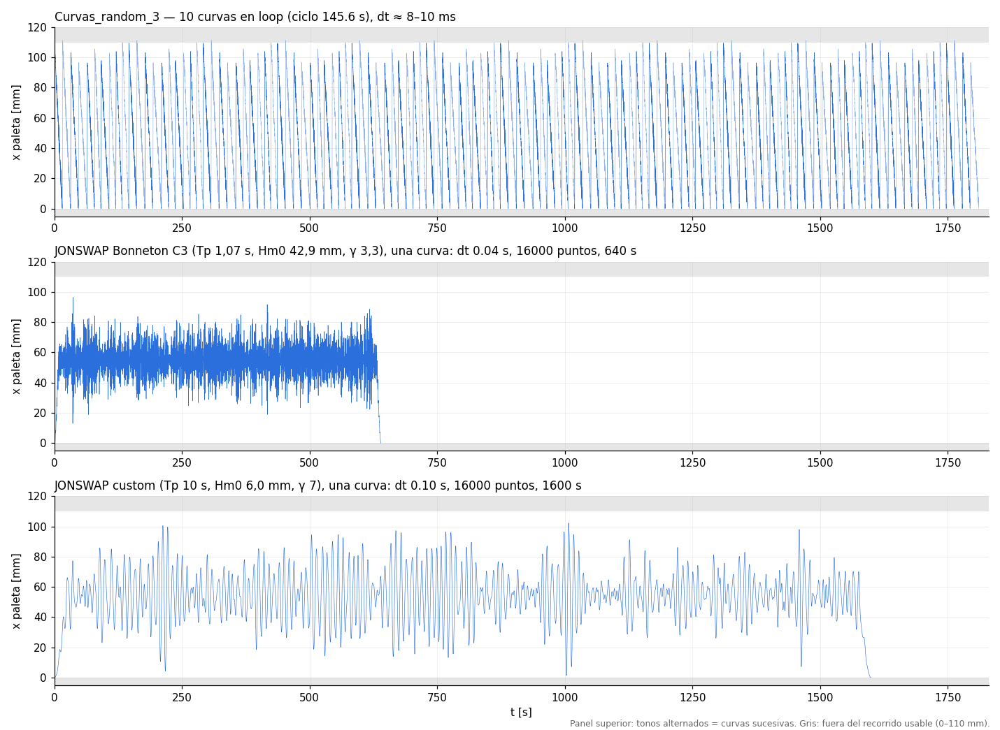
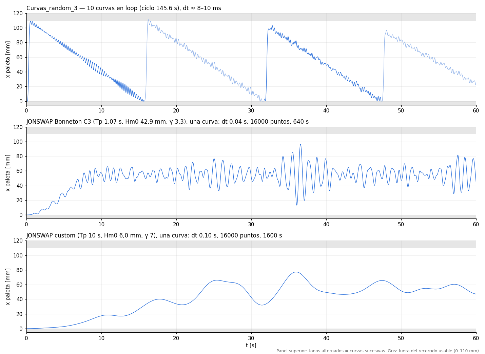
[13:50] Llenado de la cuba
Llenando la cuba con agua destilada; falta agua. La calibración (sobrellenar y vaciar de a poco) queda para más tarde hoy o mañana, cuando haya agua suficiente.
[13:52] Placa PersonalDaq en la compu de la sala
La placa es la de siempre, 374679 (PersonalDaq3001{374679}). No la reconocía porque había que reiniciarla. La otra placa del laboratorio es la 374683 (la de los scripts del generador de la Tesis), pero no hace falta cambiar el código.
[14:04] Primera prueba con la cuba poco llena — montaje
Primera prueba con poca agua: la playa plana del final queda sin sumergir, para evitar rebotes. Los tres sensores están sumergidos.
- Cuba: 2 m de largo.
- Paleta (la grande): en su posición más estirada, a 25 cm del comienzo de la rampa. Sumergida hasta ~1 cm del fondo.
- “Quedó a 15 cm del final de la cuba en el otro lado” (a confirmar a qué se refiere, ver esquema).
- Sensor 3: a 3 cm del inicio de la rampa.
- Sensor 2: a 32 cm del primero.
- Sensor 1: a 33 cm del otro borde.
- Esquema con medidas (lectura de Claude, a confirmar; en naranja lo dudoso). Posiciones desde la pared de la paleta: paleta 15, rampa 40, S3 43, S2 75, S1 167, pared 200 cm.
- Si S1 está a 167 cm, sobre la rampa queda a 127 cm del inicio (~4,4 cm sobre el fondo con tan β = 0,035). Para que esté mojado con la playa seca, h en la paleta tiene que ser ~4,5–5 cm.
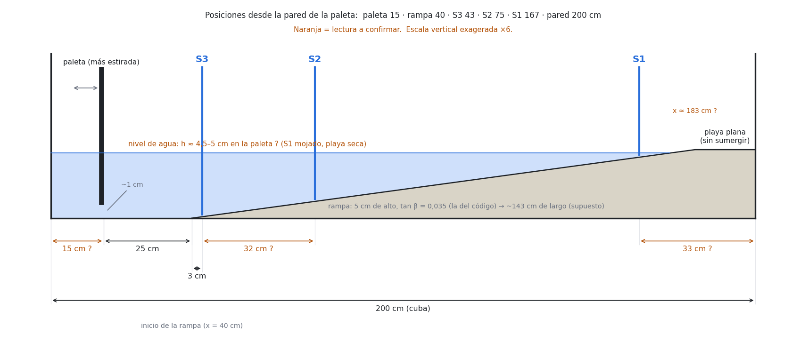
[14:09] Primera prueba — correcciones del montaje y parámetros
- Los 15 cm son del lado opuesto a la paleta: entre el final de la rampa/playa plana y la pared del fondo, sin fondo ni batimetría (no son entre la paleta y su pared).
- Sensor 1: a 33 cm del final de la rampa/playa plana (no de la pared).
- Frecuencia de la portadora de los sensores: 61,3 kHz, igual que la vez pasada.
- Altura del agua para estas pruebas exploratorias: h = 3,65 cm.
- Esquema corregido (origen en el inicio de la rampa). Reemplaza al anterior, cuya lectura de los 15 cm y de S1 estaba mal. S3 en x = 3 cm y S2 en x = 35 cm. S1 en x = (rampa + playa) − 33 cm.
- Falta medir: la distancia de la paleta a su pared (o el largo de rampa + playa = 160 cm − esa distancia) y dónde empieza la playa plana.
- Chequeo: con tan β = 0,035 (la del código de Iribarren) y h = 3,65 cm, la costa queda a ~104 cm del inicio de la rampa. S1 está mojado solo si rampa + playa < 137 cm. Con la paleta a 25 cm de su pared, S1 quedaría en x = 102 cm, con ~1 mm de agua.
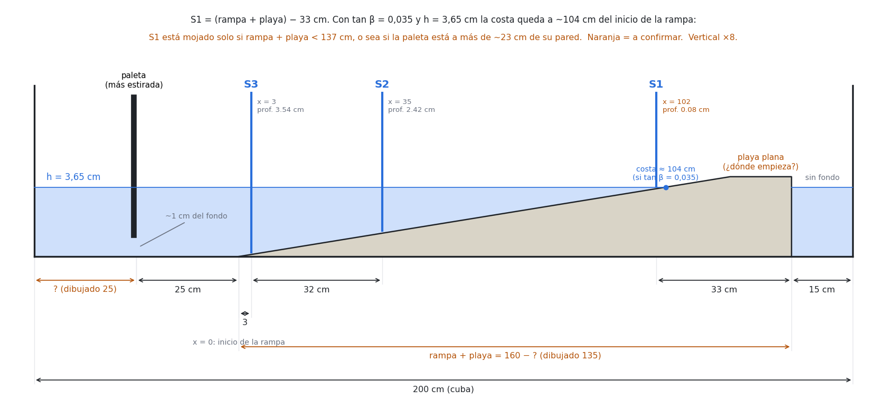
[14:11] Primera prueba — geometría de la rampa
- Rampa: 1 m de largo, 3,5 cm de alto → tan β = 0,035 (coincide con la del código de Iribarren). La playa plana arranca en x = 100 cm, a 3,5 cm de altura.
- Con h = 3,65 cm, sobre la playa queda una lámina de ~1,5 mm de agua: queda apenas cubierta, no seca (salvo que la tensión superficial deje zonas secas). La costa sobre la rampa estaría pasando el final de la rampa.
- Profundidades sobre los sensores: S3 (x = 3 cm) 3,54 cm; S2 (x = 35 cm) 2,42 cm; S1 a 33 cm del final de la playa → si la playa mide más de 33 cm, S1 está sobre la playa con ~1,5 mm de agua.
- Falta el largo de la playa (o la distancia de la paleta a su pared) para ubicar S1.
[14:12] Primera prueba — distancia de la paleta a su pared
- 41 cm desde el otro borde de la paleta (la cara de atrás) hasta la primera pared. 1 cm de ancho, acrílico (interpretado como el espesor de la paleta, a confirmar).
- Cierre de cotas (2 m de largo interior): 41 + 1 + 25 + 100 (rampa) + playa + 15 = 200 → playa ≈ 18 cm. Si el 1 cm fuera la pared y los 2 m fueran exteriores, la playa daría ~17 cm. La diferencia no cambia nada.
- Entonces S1 queda sobre la rampa, no sobre la playa: x ≈ 118 − 33 = 85 cm desde el inicio de la rampa, con ~0,7 cm de agua.
- Esquema final del montaje. Reemplaza a los dos anteriores. x desde el inicio de la rampa: paleta −25, S3 3, S2 35, S1 85, fin de la rampa 100, fin de la playa 118, pared 133 cm.
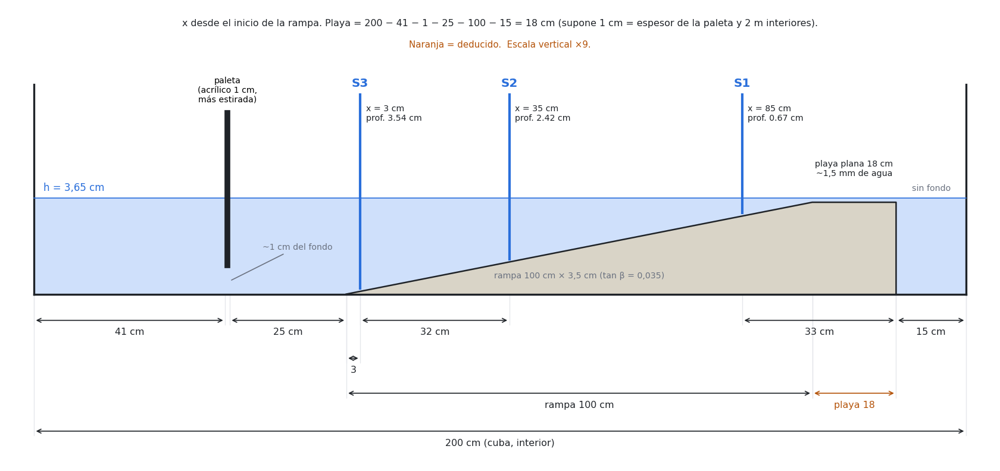
[14:18] Primera prueba — nivel del agua y medición de prueba
- Los 3,65 cm se midieron al inicio de la cuba (lado de la paleta). La cuba debe estar algo inclinada, porque el agua no llega a cubrir del todo la rampa y la playa. Para que la playa (3,5 cm) quede seca, el nivel tiene que bajar más de 1,5 mm a lo largo de ~1,4 m, o sea una pendiente de al menos ~1 mm/m.
- El esquema sigue valiendo. Las profundidades sobre S2 y S1 son cotas superiores: medir la profundidad local en cada sensor (S1 tiene ≤ 7 mm).
- Arranca la medición de prueba.
[14:28] Primera prueba — observación durante la medición
- Con menos agua la ola rompe antes. “El primer sensor queda medio lejos de la rompiente”: cuando la ola llega, ya decayó bastante. Lo positivo: seguro estamos bien metidos en la inner surf zone.
- Medición de 10 min en curso. Después se pasa por pendrive para correr las baterías de análisis (versiones finales en el directorio del Workshop,
Presentaciones/).
[14:31] Primera prueba — inclinación de la cuba y analizador
Inclinación de la cuba: del orden de 0,1°–0,15° (1,7–2,6 mm/m), más profunda del lado de la paleta. Con h = 3,65 cm junto a la pared de la paleta (x = −67 cm), las profundidades locales estimadas son:
Punto x [cm] prof. 0,1° [cm] prof. 0,15° [cm] S3 3 3,42 3,36 S2 35 2,25 2,16 S1 85 0,41 0,28 Playa (100–118 cm) seca (−1,5 mm) seca (−3 mm) Esto es consistente con que la playa quede seca. S1 tiene apenas 3–4 mm de agua.
- Para el análisis se usa el código del analizador de la Segunda iteración (
Segunda iteración/Tres sensores/Analizador/). Es idéntico byte a byte al de la Tercera. - Preparando la batería en
Claude/tercera_iteracion/.lockin.pyes el lock-in sin diálogo de archivos: reproduce bit a bit el.npyde 10forzados y tarda ~3–4 min para 10 min × 3 canales.
[14:33] Primera prueba — el motor tocó el tope
- A un par de minutos del final de la medición de 10 min, el motor acumuló suficiente lag como para empezar a tocar el tope.
- Para el análisis: excluir el tramo final afectado (usar t ≲ 8 min, a confirmar viendo la serie).
- Posible relación: Curvasrandom3 llega a ~111 mm, apenas por encima del recorrido usable de 0–110 mm. Si el lag corre la posición, el pico de cada triángulo se acerca al tope. A revisar: qué curva estaba corriendo y si conviene bajar la amplitud o el offset.
[14:35] Primera prueba — el motor se frenó
- Por el mismo motivo (lag acumulado y tope), el motor se frenó cuando faltaban menos de 30 s para terminar la medición.
- Al analizar hay que cortar el tramo final: desde que el motor empieza a tocar el tope (~2 min antes del final) y sobre todo los últimos ~30 s con la paleta frenada. El corte exacto se elige viendo la serie.
[14:45] Primera prueba — datos y nivel del lado opuesto
- Medición:
Canal_365_muchos_forzados.bin(600 s, 4 canales a 250 kHz, portadora 61,3 kHz). Copiada del pendrive aTercera iteración/Tres sensores/Mediciones/(verificada concmp). El lock-in, con el analizador de la Segunda, quedó enClaude/tercera_iteracion/datos/y tardó 3,4 min. - Del lado opuesto (pared del fondo) hay 3,1 cm de agua. Medida dudosa: la regla se leyó rápido. Si es correcta, el nivel baja 5,5 mm en 2 m (≈ 0,16°), consistente con la estimación de 0,1°–0,15°.
- Próximo paso: terminar de llenar hasta 3,9 cm para repetir idéntico lo de la Segunda iteración.
[14:47] Primera prueba — series y espectros (sin calibrar)
- Series (fase × −1, sin el primer minuto): “bastante bien”. El forzado se apaga hacia ~560 s (la RMS cae a ~1/4). Análisis en t ∈ [60, 480] s, para dejar afuera el tramo en que el motor tocaba el tope.
El piso de ruido bajó mucho respecto de 10forzados (mediana de la PSD de la fase entre 60 y 120 Hz):
Canal Canal365 [rad²/Hz] 10forzados [rad²/Hz] Factor 1 1,0e-11 2,1e-10 ~20× 2 1,2e-11 2,1e-10 ~18× 3 2,6e-11 3,7e-09 ~140× El canal 3 ya no tiene el exceso de ruido de banda ancha (ni la joroba de ~700 Hz). Quedan líneas angostas de red en 50 Hz y sus armónicos (sobre todo en el canal 2). Falta separar qué lo arregló (¿agua destilada? ¿reinicio de la placa? ¿cableado?).
- Std de la fase: 0,0040 / 0,0044 / 0,0083 rad (canales 1/2/3), contra 0,013–0,014 en 10forzados: con menos agua, olas más chicas en S1 y S2.
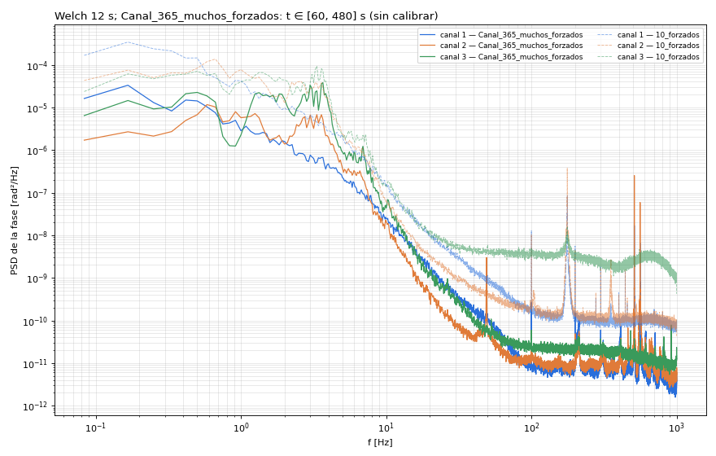
[14:48] Primera prueba — espectro E/Ẽ con el ajuste de Bonneton (código del póster, cal. provisoria)
t ∈ [60, 480] s, Welch 12 s, ajuste en ω ∈ (16, 80) rad/s, igual que el póster.
| Canal | Frentes | Tm [s] | fm [Hz] | ων [rad/s] | fν [Hz] | RB |
|---|---|---|---|---|---|---|
| 1 | 147 | 2,84 | 0,35 | 153 ± 743 | 24,3 | 2727 |
| 2 | 465 | 0,90 | 1,11 | 34,5 ± 32,7 | 5,5 | 195 |
| 3 | 979 | 0,43 | 2,34 | 17,2 ± 2,9 | 2,7 | 46 |
(10forzados, canal 1: Tm = 0,69 s, ων = 31,4 ± 3,1 rad/s, RB = 136.)
- Canal 1: el espectro sigue ω⁻² limpio en todo el rango de ajuste y no se ve el codo viscoso, así que ων queda indeterminado (incerteza ~5 veces el valor) y RB = 2727 no es confiable. Además Tm sale de solo 147 frentes: el umbral de findpeaks (prominencia 0,15 cm, con la calibración vieja) es grande para las olas chicas de S1, se pierde frentes y fm probablemente esté subestimada.
- Pendiente: con la calibración nueva, revisar el umbral de frentes y extender el rango de ajuste más allá de 80 rad/s, donde el espectro se empina.
[14:51] Segunda prueba — h ≈ 3,9 cm, como en la Segunda iteración
- Nivel: 3,95 cm, medido en el mismo lugar que en la Segunda iteración (allá era 3,9 cm).
- Medición en curso, de 800 (“800 cm” en el mensaje; se interpreta como 800 s, a confirmar).
- Home position del motor cambiada a −29 mm, para intentar que no llegue al tope (en la primera prueba el lag acumulado lo llevó al tope y lo frenó).
[14:52] Primera prueba — espectro del canal 1 bien ajustado
- El problema era ωm mal estimado, como pasaba originalmente. Con la prominencia del póster (0,15 cm) se detectaban solo 147 frentes en S1 (fm = 0,35 Hz). Bajándola, se detectan las olas chicas.
- Barrido (
Claude/tercera_iteracion/barrido_espectro.py): distancia entre frentes 0,05–1 s, prominencia 0,01–0,15 cm, rango de ajuste ωlo 8–25 y ωhi 80–400 rad/s. Con ωhi > 120 rad/s no hay ajustes bien determinados. - Elegido (mejor rms del residuo en log, 0,059): distancia 0,135 s (la del póster), prominencia 0,02 cm, ajuste en ω ∈ (25, 80) rad/s. → 943 frentes, Tm = 0,446 s, fm = 2,24 Hz (ωm = 14,1 rad/s), ων = 33,7 ± 2,2 rad/s (fν = 5,36 Hz), RB = 94, νc = 8,0e-5 m²/s (este último depende de la calibración provisoria; ων y RB no). Ajustes casi igual de buenos dan ων = 30–41 rad/s y RB = 50–160: RB depende sobre todo de cómo se detectan los frentes (ωm).
- Comparación: 10forzados canal 1 dio ων = 31,4 ± 3,1 rad/s y RB = 136.
- El usuario: “Ahora sí, de eso estaba hablando. Da re bien el espectro.”
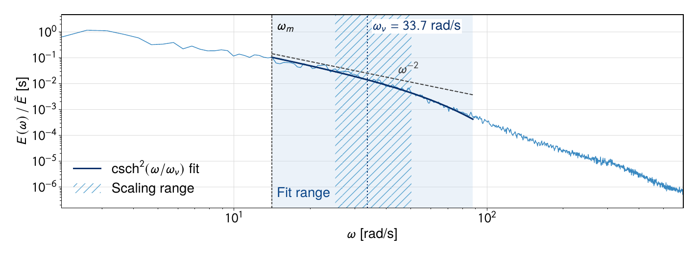
[14:56] Dónde quedan los archivos
- Medición cruda:
Tercera iteración/Tres sensores/Mediciones/Canal_365_muchos_forzados.bin(+_metadata.json), copiada del pendrive. - Lock-in (fase):
Tercera iteración/Tres sensores/Mediciones analizadas/Canal_365_muchos_forzados_channel_{1,2,3}_analizada.npy. De ahora en más la batería escribe ahí. - Figuras y resultados de los análisis:
Claude/tercera_iteracion/Canal_365_muchos_forzados/(resumen, espectros, Iribarren, funciones de estructura). - Figuras para el log:
~/Org/Assets/2026/10/Day_13/.
[14:58] Primera prueba — Iribarren (provisorio)
Procesado del póster (fmax = 30 Hz, ventanas de 300 olas) con la profundidad local de cada sensor y la calibración provisoria (la de 10forzados):
| Canal | prof. [cm] | Olas | ⟨ξ⟩ | σ | μ | Spilling |
|---|---|---|---|---|---|---|
| 1 | 0,35 | 601 | 0,38 | 0,215 | −1,00 | 91 % |
| 2 | 2,2 | 1111 | 0,41 | 0,297 | −0,86 | 80 % |
| 3 | 3,4 | 1184 | 0,28 | 0,339 | −1,34 | 97 % |
- Para Iribarren hace falta sí o sí la calibración (ξ depende de H): estos valores no se usan hasta tener la de la Tercera.
[15:00] Primera prueba — scaling (Sp, ζp) y reorganización
- Funciones de estructura (computer.py del póster, t ∈ [60, 480] s, rango B τ ∈ [125, 250] ms):
- Canal 1: con n = 2, ζp satura en ~1 para p ≳ 4 (ζ6 = 1,07, tipo Burgers). Con n = 3 y 4, ζp crece casi lineal (ζ3 ≈ 1,04, ζ6 ≈ 1,85). Es el mismo patrón que en 10forzados (n = 2 satura; n ≥ 3 = salto + cresta).
- Canales 2 y 3: ζp negativos en el rango B. Ese rango, elegido para 10forzados, no corresponde a esta medición (S3 tiene fm ≈ 2,3 Hz): hay que elegir el rango por canal.
- Las incertezas de ζp que se imprimen son de reemplazo (falta la convergencia de esta medición).
- Todo lo de análisis se movió a
Tercera iteración/Análisis/: los scripts (lockin, resumen, correrposter, barridoespectro, visores, bateria.sh), un README y los resultados enAnálisis/Canal_365_muchos_forzados/. Los.npyestán enTres sensores/Mediciones analizadas/.
[15:04] Primera prueba — rango de ajuste de Sp elegido para el canal 1
- Con la app interactiva (
03_analisis_interactivo.pyde la Segunda, sobre el.npzde esta medición): canal 1, f ∈ [2,07, 11,94] Hz → τ ∈ [83,8, 482] ms. - Resultado (estilo del póster, Sp/σp; ση = 0,059 cm con la calibración provisoria):
- n = 2: satura, ζ4 = 0,93, ζ5 = ζ6 = 0,95 (tipo Burgers, ζ → 1).
- n = 3: ζ3 = 1,08, ζ6 = 1,90. n = 4: ζ3 = 1,10, ζ6 = 1,89 (crecen casi lineal, por debajo de p/2).
- Las barras de error siguen siendo de reemplazo (falta la convergencia de esta medición).
- Figuras:
Tercera iteración/Análisis/Canal_365_muchos_forzados/funciones_estructura/canal_1_tau_83.8-482/.
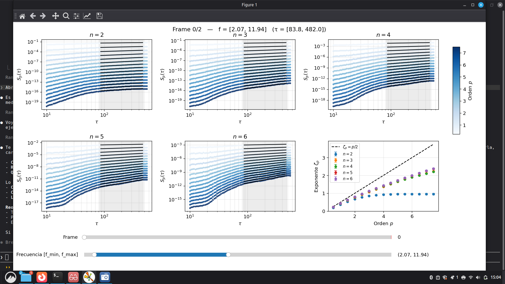
[15:06] Primera prueba — convergencia de Sp (canal 1, τ = 201 ms)
incertezas_convergencia.pydel póster, adaptado a t ∈ [60, 480] s con ventanas de medición de 50 a 410 s. τ = √(83,8·482) = 201 ms, el centro del rango elegido.- No converge: Sp cae de forma monótona con el tiempo de medición. En 50 s vale ~2 veces el valor final para p = 6, ~1,2 para p = 0,5. Sigue bajando en las últimas ventanas, por debajo de −5 % para p alto. No es ruido estadístico sino una tendencia: la estadística cambia durante la medición, con más energía al principio. Ya se veía en la RMS por ventanas de 5 s del canal 1 (~0,005–0,006 rad al principio, ~0,0035 después). ¿Deriva del motor (lag acumulado hacia el tope), del nivel o del forzado?
- ε de las últimas 10 ventanas (T ≥ 281 s): 0,2–0,3 % (p = 0,5) a ~5 % (p = 6). Subestiman la incerteza real por la tendencia. Con ellas, ζ6 = 0,953 ± 0,019 (n = 2), 1,898 ± 0,019 (n = 3), 1,893 ± 0,017 (n = 4).
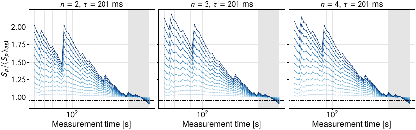
[15:07] Segunda prueba — medición idéntica a la Segunda iteración
- La primera prueba (
Canal_365_muchos_forzados) queda en pausa. - Medición:
muchos_forzados_395.bin(h = 3,95 cm, 752,6 s, 4 canales a 250 kHz, home del motor en −29 mm). Copiada del pendrive aTres sensores/Mediciones/y verificada concmp. - Análisis: los mismos parámetros que en la Segunda iteración, ignorando los primeros 60 s.
[15:12] JONSWAP en formato de la interfaz
- Las JONSWAP se cargan desde la interfaz: CSV de una sola columna de setpoints en mm, sin encabezado ni tiempos. El nombre lleva la duración total en ms como primer campo.
- Duración = tfinal − tinicial = (N − 1)·dt, la misma convención que
linmot_bulk_upload.py:639960ms_bonneton_C3_h_20cm_Tp_1.07_Hm0_42.9mm_seed_1_una_curva.csv: 16 000 puntos, dt = 40 ms.1599900ms_custom_h_20cm_Tp_10.00_Hm0_6.0mm_gamma_7_seed_1_una_curva.csv: 16 000 puntos, dt = 100 ms.
- Están en la carpeta de cada curva, en
Tercera iteración/Curvas forzado/Curvas_jonswap/(compu y pendrive).
[15:12] Segunda prueba — series y espectro (sin calibrar)
- Series estables en t ∈ [60, 752] s y el motor no se frenó. Deriva lenta de la línea de base en los canales 1 y 2.
Contra 10forzados (Segunda iteración, t ∈ [60, 600] s):
Canal std fase [rad] 10forz. [rad] piso 60–120 Hz [rad²/Hz] 10forz. pico [Hz] 10forz. [Hz] 1 0,0063 0,0127 1,3e-11 2,1e-10 0,17 0,17 2 0,0054 0,0135 1,3e-11 2,1e-10 0,67 0,67 3 0,0091 0,0143 3,0e-11 3,7e-09 1,42 3,33 - Los picos de baja frecuencia de los canales 1 y 2 (0,17 y 0,67 Hz) coinciden exactamente con los de 10forzados: es consistente con que en junio se usó el mismo forzado (Curvasrandom3).
- La fase varía ~2 veces menos que en 10forzados con el “mismo” montaje. ¿Cambió la sensibilidad de los sensores con el agua destilada (otra conductividad)? Hace falta la calibración para comparar alturas.
- El piso de ruido sigue 16× más bajo en los canales 1 y 2 y 120× más bajo en el canal 3, igual que en la primera prueba.
[15:13] Segunda prueba — espectro E/Ẽ ajustado, canal 1
- Con los parámetros del póster tal cual (distancia 0,135 s, prominencia 0,15 cm, ajuste en 16–80 rad/s): 467 frentes, fm = 0,68 Hz, ων = 73 ± 99 rad/s → indeterminado. Es lo mismo que en la primera prueba: la prominencia está en cm con la calibración vieja y la fase acá es la mitad que en 10forzados.
- Elegido: los mismos parámetros del póster, con la prominencia escalada por la amplitud: 0,15 × (0,0063/0,0127) ≈ 0,075 cm. → 1184 frentes, Tm = 0,582 s, fm = 1,72 Hz, ων = 30,0 ± 3,4 rad/s (fν = 4,77 Hz), RB = 110. 10forzados (póster): ων = 31,4 ± 3,1 rad/s, RB = 136. Compatibles.
- Variantes: prominencia 0,05 cm → ων = 29,2 ± 1,9 rad/s, RB = 89. El mejor del barrido (distancia 0,1 s, prominencia 0,01 cm, ajuste en 20–80 rad/s) → ων = 26,2 ± 0,5 rad/s, RB = 52, pero con una prominencia tan baja probablemente cuenta ruido como frentes.
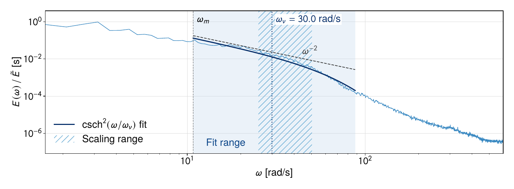
[15:15] Segunda prueba — espectro del canal 1, mejor ajuste
- Barrido fino con el borde alto fijo en 80 rad/s (lo pidió el usuario): distancia 0,05–0,3 s, prominencia 0,005–0,1 cm, borde bajo 10–30 rad/s.
- Los mejores ajustes (rms en log ≈ 0,061–0,066) tienen todos el borde bajo en 20 rad/s y prominencia de 0,01–0,02 cm: ων = 25,5–26,7 rad/s y RB = 52–66. Es una meseta robusta.
- Elegido: distancia 0,1 s, prominencia 0,015 cm, ajuste en (20, 80) rad/s → 1968 frentes, Tm = 0,351 s, fm = 2,85 Hz, ων = 25,7 ± 0,7 rad/s (fν = 4,10 Hz), RB = 57, νc = 1,6e-4 m²/s (provisorio).
- Ojo: con una prominencia tan baja (0,015 cm con la calibración vieja), fm = 2,85 Hz puede estar contando ondulaciones chicas como frentes. RB depende de eso. La prominencia escalada (0,075 cm) daba ων = 30,0 ± 3,4 rad/s y RB = 110 (≈ póster), con peor ajuste.
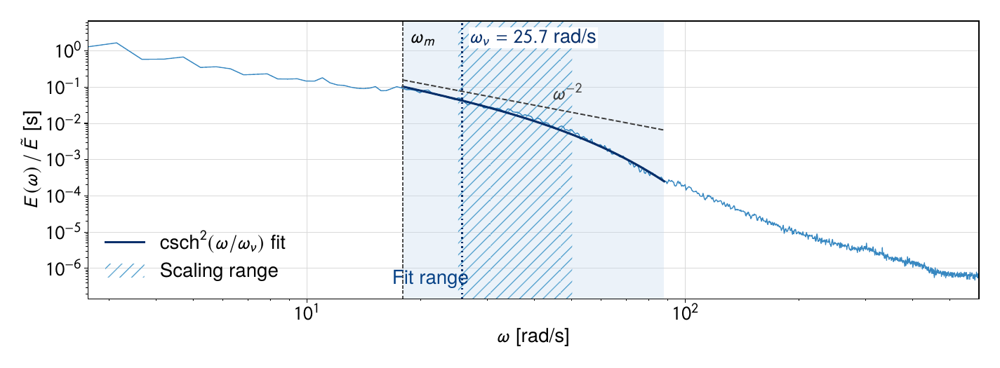
[15:16] ¿Por qué cambia ωm (y RB) entre 10forzados y la de 3,95 cm?
- ωm = 2π/Tm, con Tm = tiempo medio entre los frentes que detecta findpeaks. Depende directamente de los umbrales (distancia y prominencia), y la prominencia está en cm con la calibración vieja. Hoy la fase es la mitad: con el mismo umbral se detectan menos olas, Tm sube y ωm baja.
Prueba con parámetros equivalentes (prominencia escalada por la amplitud):
Medición Parámetros fm [Hz] ων [rad/s] RB 10forzados 0,135 s, 0,15 cm, 16–80 (póster) 1,45 31,4 ± 3,1 136 3,95 cm 0,135 s, 0,075 cm, 16–80 1,72 30,0 ± 3,4 110 10forzados 0,1 s, 0,03 cm, 20–80 3,25 31,5 ± 0,7 61 3,95 cm 0,1 s, 0,015 cm, 20–80 2,85 25,7 ± 0,7 57 Con criterios equivalentes, RB coincide (136/110 y 61/57). La diferencia grande de RB venía de comparar umbrales distintos, no de la física. RB no es un número único: depende de cómo se define un “frente”.
- Diferencias que sí parecen reales:
- ων ~15–20 % más bajo hoy con el ajuste fino (25,7 contra 31,5 rad/s): frentes algo más suaves. Candidatos: agua destilada (otra tensión superficial y otra limpieza de la superficie), temperatura y viscosidad, 3,95 contra 3,9 cm, o la respuesta del sensor.
- Fase ~2× más chica, con picos del forzado iguales: ¿cambió la sensibilidad del sensor (conductividad del agua destilada) o la ola? Se resuelve con la calibración.
- Frecuencia media espectral m1/m0: 1,28 Hz (10forzados) contra 1,45 Hz (hoy), parecidas. Cruces por cero: 11,5 contra 6,2 Hz; la diferencia es por el ruido de alta frecuencia de 10forzados.
[15:19] ων depende de la posición del sensor
- Hipótesis del usuario: el sensor está en una posición levemente distinta, y ων depende de dónde se mide.
- Hoy, con los mismos parámetros (distancia 0,1 s, prominencia 0,015 cm, ajuste en 20–80 rad/s): canal 1, ων = 25,7 ± 0,7 rad/s con buen ajuste (rms 0,061). En los canales 2 y 3 la csch² no ajusta (rms 0,2–0,37 aun con el mejor de cada barrido): el espectro tipo bore solo aparece en S1, cerca de la costa. Que ων dependa tanto de la posición es consistente con la hipótesis.
- Montaje de 10forzados (Journal 2026-06-19, week-25): S1–S2 ≈ 51 cm y S2–S3 ≈ 31 cm (hoy 50 y 32 cm), agua de la canilla, h = 4,1 cm, rampa corrida ~1 cm hacia el motor y S1 dado vuelta (“del otro lado del perfil chiquito”); “las ondas más grandes llegan a romper justo antes o sobre el sensor”.
- Escala del efecto: con tan β = 0,035, cambiar el nivel 1,5 mm (4,1 → 3,95 cm) mueve la costa y la rompiente ~4 cm sobre la rampa, lo mismo que mover el sensor 4 cm. A eso se suman la inclinación de la cuba (0,1°–0,15°) y ~1 cm de diferencia en la posición de la rampa. La posición relativa a la rompiente puede haber cambiado varios cm aunque el montaje sea “idéntico”.
- Nota: en 10forzados el motor también se detuvo a la mitad de la medición de tres sensores (se fue corriendo hasta tocar el servo). Por eso se usaron solo los primeros 10 min.
[15:19] Tercera prueba — JONSWAP Bonneton
- Arranca la medición con el JONSWAP escalado de Bonneton:
639960ms_bonneton_C3_h_20cm_Tp_1.07_Hm0_42.9mm_seed_1_una_curva.csv, cargado desde la interfaz. Tp = 1,07 s, Hm0 = 42,9 mm, γ = 3,3, 640 s, dt = 40 ms.
[15:26] Segunda prueba — Iribarren (S3) y deriva lenta
Iribarren, solo sensor 3, con la calibración de 10forzados y la convención del póster (D = profundidad nominal):
Medición D [cm] Olas ⟨ξ⟩ σ μ Spilling 3,95 cm (t = 60–750 s) 3,95 1740 0,284 0,345 ± 0,009 −1,293 ± 0,014 95,5 % 10forzados (póster) 4,1 1398 0,228 0,391 ± 0,020 −1,611 ± 0,032 99,5 % Con la profundidad local de S3 (~3,7 cm) cambia muy poco (⟨ξ⟩ = 0,282). ξ más alto hoy es compatible con olas más chicas (H/L menor), o con un sensor menos sensible: la fase es ~2× más chica y la calibración es la vieja.
- Deriva lenta: la media en ventanas de 30 s baja en los tres canales, en el mismo sentido y con magnitud parecida: Δ(−φ) ≈ −0,007 / −0,006 / −0,005 rad en ~11 min, comparable con la std de la señal (0,005–0,009 rad). Con la calibración vieja (~0,07 rad/cm) sería ~1 mm de bajada del nivel en 11 min. Al ser común a los tres sensores, apunta a algo global: nivel (¿pérdida?, ¿evaporación?), temperatura (conductividad del agua destilada) o deriva de la electrónica.
- No afecta a Sp (los incrementos de n ≥ 2 sacan las constantes, y los de n ≥ 3 sacan las rectas). Sí ensucia la PSD por debajo de ~0,01 Hz.
- Para revisar: medir el nivel al final, y ver si la deriva sigue con la paleta quieta.
- [15:27] Iribarren de S3 con 16 bins en vez de 17, en el mismo intervalo [0,1027, 1,0990] (ancho de bin 0,0623): ⟨ξ⟩ = 0,284, σ = 0,347 ± 0,010, μ = −1,298 ± 0,015, spilling 95,5 %. Prácticamente igual que con 17.
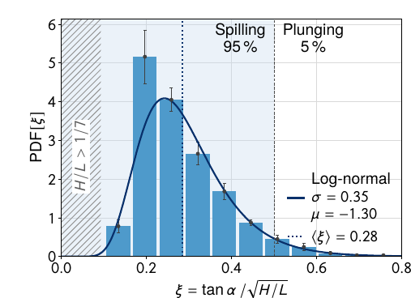
- [15:29] Iribarren de S3 con 15 bins (ancho 0,0664): ⟨ξ⟩ = 0,284, σ = 0,353 ± 0,010, μ = −1,312 ± 0,016, spilling 95,5 %. Con 17/16/15 bins: σ = 0,345/0,347/0,353 y μ = −1,293/−1,298/−1,312, todo dentro de ~1σ. La diferencia en la barra del pico es un efecto de binning (la distribución sube de golpe hasta la moda en ξ ≈ 0,19–0,20 y los bordes de bin la cortan distinto).
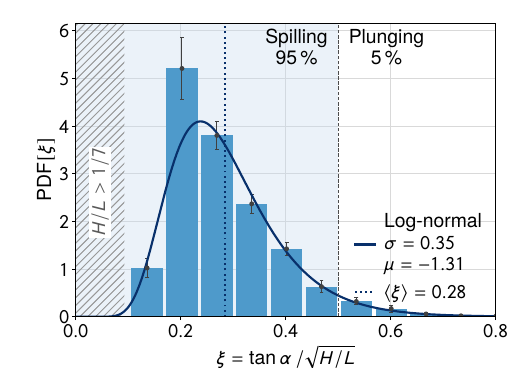
- [15:29] Iribarren de S3, bins contados solo hasta ξ = 0,8 (lo pidió el usuario): con 17 bins en [0,1027, 1,099] entraban ~12 hasta 0,8 → uno menos = 11 bins en [0,1027, 0,8], ancho 0,0634. Queda 1 ola afuera (ξ > 0,8). σ = 0,349 ± 0,011, μ = −1,301 ± 0,017, ⟨ξ⟩ = 0,284, spilling 95,5 %.
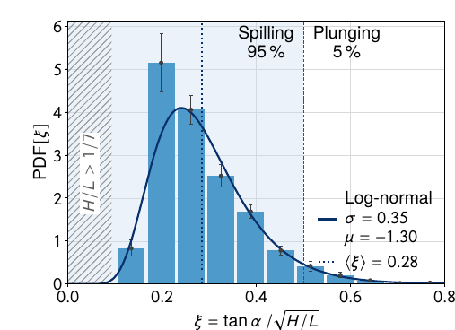
[15:33] Segunda prueba — scaling y convergencia, canal 1 (τ ∈ [83,8, 482] ms, t ∈ [60, 750] s)
- ζp (Sp/σp, ση = 0,091 cm con la calibración provisoria):
- n = 2: satura, ζ4 = 0,86, ζ6 = 0,92 ± 0,03.
- n = 3: ζ3 = 0,87, ζ6 = 1,63 ± 0,03. n = 4: ζ6 = 1,65 ± 0,03. Crecen casi lineal, más bajos que en la primera prueba (ζ6 ≈ 1,90).
- Convergencia en τ = 201 ms: tampoco converge. Hay saltos a ~80 y ~150 s (eventos grandes que entran a la ventana), un máximo de ~1,75 para p = 6 y después una caída continua que sigue en las últimas ventanas (−15 % para p alto en la última). ε de las últimas 10 ventanas (T ≥ 425 s): 0,7–0,9 % (p = 0,5) a ~9,5 % (p = 6), subestimado por la tendencia.
- La tendencia de fondo coincide con la RMS del canal 1, que baja después de ~600 s, y con la deriva lenta de los tres canales: la estadística no es estacionaria.
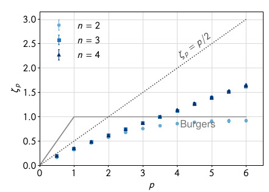
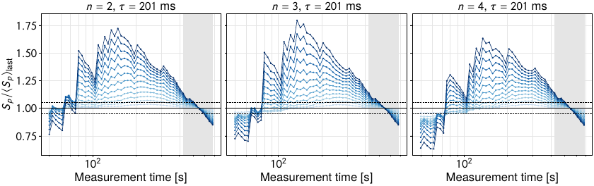
[15:34] Tercera prueba — JONSWAP Bonneton: datos
- Medición:
JONSWAP_BONNETON_395.bin(h = 3,95 cm, ~660 s). Copiada del pendrive aTres sensores/Mediciones/. Se analiza igual quemuchos_forzados_395: lock-in, series, espectro con barrido (borde alto en 80 rad/s), Iribarren de S3 (11 bins hasta 0,8, D = 3,95 cm, calibración vieja) y Sp, convergencia y scaling del canal 1 (τ ∈ [83,8, 482] ms).
[15:38] Corrección de niveles y cuarta prueba (muchos forzados, h = 3,6 cm)
- Corrección: el 3,65 cm de la primera prueba estaba medido del otro lado respecto del punto de referencia que se usa ahora (el mismo de la Segunda iteración, donde se midieron 3,95 y ahora 3,6 cm). En el punto de referencia, la primera prueba correspondería a ~3,1 cm. La diferencia entre lados es ~0,55 cm, consistente con la inclinación de ~0,15°.
- Consecuencia: las profundidades locales que se estimaron para
muchos_forzados_395yJONSWAP_BONNETON_395tomando 3,95 cm del lado de la paleta están subestimadas. Si del lado de la paleta hay ~3,95 + 0,55 ≈ 4,5 cm: S3 ≈ 4,2, S2 ≈ 3,0, S1 ≈ 1,1 cm, y la playa con ~5 mm de agua. A confirmar de qué lado está el punto de referencia.
- Consecuencia: las profundidades locales que se estimaron para
- Nuevo nivel: 3,6 cm en el punto de referencia. Se repiten los muchos forzados (Curvasrandom3).
[15:40] Tercera prueba — JONSWAP Bonneton: espectro e Iribarren
- t ∈ [60, 655] s (la RMS se mantiene estable hasta el final).
- Espectro E/Ẽ del canal 1, barrido con el borde alto en 80 rad/s. Mejor ajuste (rms 0,067): distancia 0,2 s, prominencia 0,005 cm, ajuste en (22, 80) rad/s → 1781 frentes, fm = 2,99 Hz, ων = 23,0 ± 0,7 rad/s (fν = 3,67 Hz), RB = 48. Los siguientes en el ranking dan ων = 24,8–25,8 rad/s, igual que muchosforzados395 (25,7). Se ve el pico del JONSWAP en ω ≈ 5 rad/s (fp = 0,93 Hz).
- Con prominencia 0,03–0,05 cm, Tm sale ~0,70–0,74 s (≈ 0,7·Tp, más físico para un JONSWAP), con ων ≈ 25,5 y RB ≈ 113–120, pero peor rms (0,11).
- Iribarren de S3 (11 bins hasta 0,8, D = 3,95 cm, calibración vieja): 1032 olas, ⟨ξ⟩ = 0,434, σ = 0,223 ± 0,003, μ = −0,888 ± 0,004, spilling 78 % / plunging 22 %; 8 olas quedan fuera (ξ > 0,8). Es muy distinto del forzado random (⟨ξ⟩ = 0,28, 95 % spilling): el JONSWAP da olas menos empinadas en S3, más cerca de plunging.
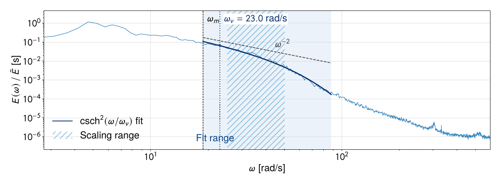
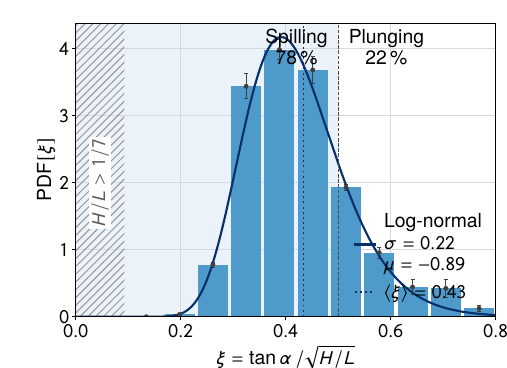
[15:40] PID del motor en “soft”
- El usuario cambió el PID del motor a “soft”, también para la medición de muchos forzados a 3,6 cm. Queda indicado en el nombre del archivo de la medición.
[15:42] JONSWAP — espectro con ωm más bajo
Barrido hacia más prominencia y distancia (menos frentes → ωm más bajo), con el borde alto en 80 rad/s. Mejor ajuste por franja de ωm:
| ωm [rad/s] | distancia [s] | prominencia [cm] | ωlo | Tm [s] | ων [rad/s] | RB | rms |
|---|---|---|---|---|---|---|---|
| 4,9 | 0,90 | 0,005 | 6 | 1,29 | 27,2 ± 3,6 | 220 | 0,14 |
| 7,8 | 0,40 | 0,03 | 12 | 0,81 | 26,8 ± 2,4 | 136 | 0,12 |
| 8,9 | 0,30 | 0,03 | 12 | 0,70 | 25,5 ± 1,6 | 113 | 0,11 |
| 10,0 | 0,30 | 0,01 | 12 | 0,63 | 27,2 ± 1,2 | 107 | 0,13 |
| 14,7 | 0,10 | 0,01 | 20 | 0,43 | 25,5 ± 1,4 | 69 | 0,11 |
| 18,8 | 0,20 | 0,005 | 22 | 0,33 | 23,0 ± 0,7 | 48 | 0,07 |
- ων es robusto (23–28 rad/s). RB ∝ 1/ωm depende casi solo de la detección de frentes. Con ωm más bajo el ajuste empeora un poco: los datos quedan por encima de la csch² entre ~20 y 40 rad/s.
- Figura con ωm = 8,9 rad/s (Tm = 0,70 s ≈ 0,66·Tp): ων = 25,5 ± 1,6 rad/s, RB = 113.
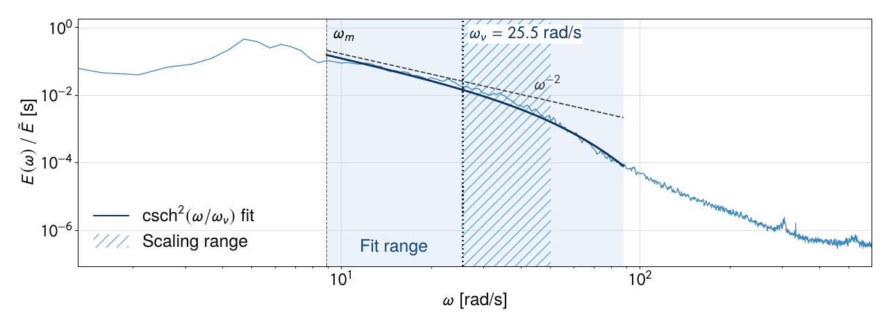
[15:43] JONSWAP — ωm intermedio y en qué sentido es comparable a Bonneton
- Espectro con ωm intermedio (elegido): distancia 0,1 s, prominencia 0,01 cm, ajuste en (20, 80) rad/s → 1391 frentes, Tm = 0,428 s, ωm = 14,7 rad/s (fm = 2,34 Hz), ων = 25,5 ± 1,4 rad/s, RB = 68, rms 0,108 (entre el más empinado, ωm = 18,8 y RB = 48, y el estirado, ωm = 8,9 y RB = 113).
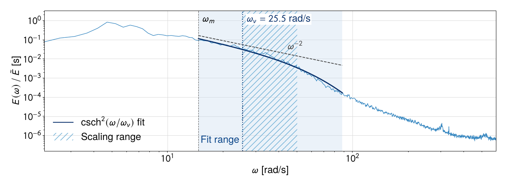
- Comparabilidad con Bonneton (vN03-C3: h0 = 0,70 m, Tp = 2,0 s, Hm0 = 0,10 m, JONSWAP γ = 3,3, pendiente 1:35):
- Cómo se diseñó: escalado de Froude que conserva kp·h = 0,951 (misma profundidad relativa en la paleta) y ξ0 = 0,226 (mismo Iribarren de aguas profundas), con h = 0,20 m en la paleta (valor provisorio del generador) y tan β = 0,035. Así salieron Tp = 1,07 s y Hm0 = 42,9 mm. La forma espectral es la misma: JONSWAP γ = 3,3.
- Con la profundidad real (~4–4,5 cm) no se conservan los adimensionales: kp·h = 0,38–0,41 (aguas someras; el diseño era 0,95). La transferencia del pistón baja de H/S = 0,94 a 0,38–0,41, así que la carrera da Hm0 ≈ 17–19 mm (lineal), no 43. Eso da Hm0/h ≈ 0,43 (vN03: 0,14), ξ0 ≈ 0,34–0,35 (vN03: 0,226) y Ursell ≈ 100–120 (vN03: 6). Es mucho más no lineal y las olas rompen enseguida.
- O sea: es comparable en la forma del espectro de entrada y en el criterio de diseño, no en los números adimensionales. El escalado correcto para h ≈ 4 cm (kp·h = 0,951 y ξ0 = 0,226) sería Tp ≈ 0,48–0,51 s (fp ≈ 2 Hz) y Hm0 ≈ 8,5–9,6 mm (Hm0/h = 0,21).
- [15:44] JONSWAP, ωm intermedio, borde superior del ajuste bajado a 70 rad/s (el pedido decía “10 Hz”; se interpretó como 10 rad/s, porque 10 Hz dejaba el borde por debajo del inferior): ων = 25,5 ± 1,6 rad/s, RB = 69, prácticamente igual que con 80. Ahora
correr_poster.pydibuja la zona “Fit range” y la curva hasta el borde del ajuste (en el póster estaban fijas en 14 Hz = 88 rad/s).
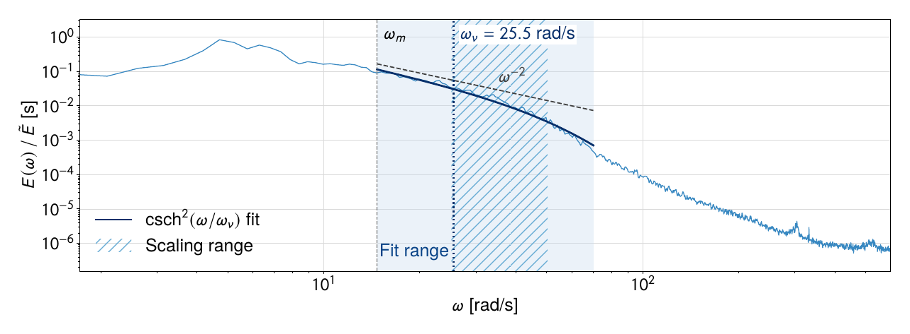
[15:45] JONSWAP de Bonneton escalado a la profundidad real
- La custom (Tp = 10 s) queda para otras pruebas más adelante: es demasiado lenta.
- Nuevo Bonneton, escalado desde vN03-C3 conservando kp·h = 0,951 y ξ0 = 0,226 con la profundidad real en la paleta, h = 4,15 cm. Supone que el punto de referencia (3,6 cm) está del lado opuesto a la paleta y le suma ~0,55 cm por la inclinación; a confirmar.
- Tp = 0,487 s (fp = 2,05 Hz), Hm0 = 8,9 mm, γ = 3,3. Hm0/h = 0,21, Ursell 9,4 (vN03: 0,14 y 6,2; difieren porque la pendiente es 1:28,6 y no 1:35, y se conserva ξ0).
- Banda generada cortada en 2,5·fp = 5,1 Hz (antes 3·fp), para quedar debajo de 6 Hz. 99 % de la energía de la paleta < 2,7 Hz, 99,9 % < 4,0 Hz.
- Una curva de 16 000 puntos con dt = 37,5 ms → 600 s (10 + 580 + 10). Compromiso: en 5,1 Hz quedan ~5 puntos por período (en fp, 13).
- Paleta en 0–63 mm (±8 mm alrededor de 55 en el bloque), |a| ≤ 1,6 m/s².
- Para la interfaz:
599962ms_bonneton_C3_h_4.15cm_Tp_0.49_Hm0_8.9mm_seed_1_fhi_2.5fp_una_curva.csv(una columna en mm, sin encabezado), en la compu y en el pendrive (Curvas_jonswap/). - Generador:
python generador_curvas_jonswap.py --escalado --h-paleta 0.0415 --f-hi-frac 2.5 --una-curva --dt 0.0375(opciones nuevas:--h-paleta,--f-hi-frac).
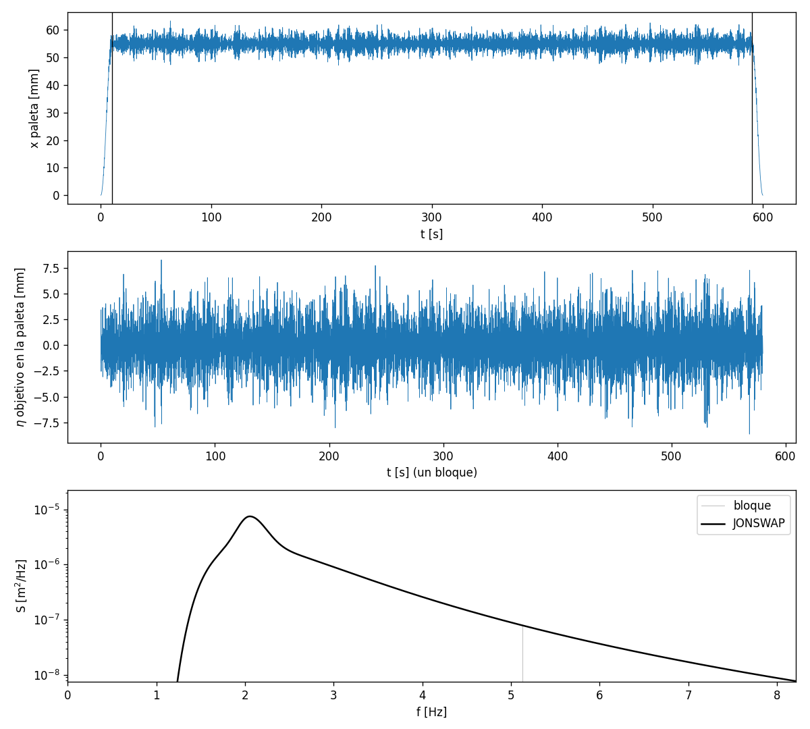
[15:49] JONSWAPBONNETON395 — scaling y convergencia, canal 1 (τ ∈ [83,8, 482] ms, t ∈ [60, 655] s)
- ζp (ση = 0,048 cm con la calibración provisoria): n = 2 satura muy pronto, en ζ ≈ 0,63 desde p ≈ 2,5 (en los random saturaba en ~0,92–0,95). n = 3: ζ3 = 0,97, ζ6 = 1,35. n = 4: ζ3 = 1,08, ζ6 = 1,61. Las curvas son cóncavas, no rectas.
- Convergencia en τ = 201 ms: mucho mejor que con los random. Sin tendencia monótona: oscila ±15–20 % hasta ~300 s y queda dentro de ±5 % en las últimas ventanas, salvo un salto de +4–8 % en la última. ε (T ≥ ~330 s): 0,3 % (p = 0,5) a 2,6–3,9 % (p = 6). Es consistente con que el JONSWAP es un forzado estacionario, a diferencia de la secuencia de 10 curvas random.
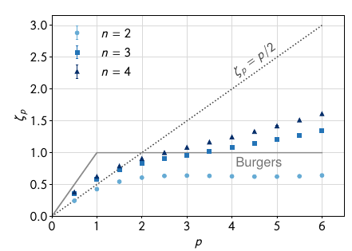
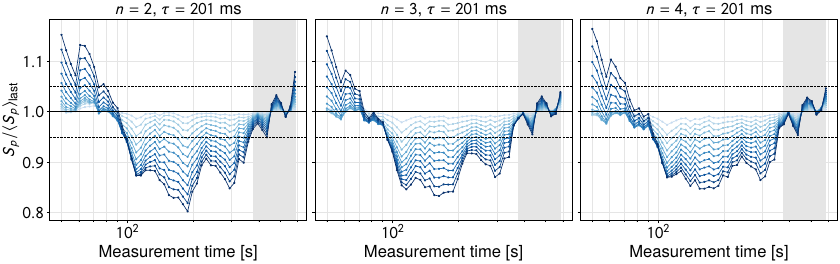
[15:56] Cuarta prueba (3,60 cm, muchos forzados, PID soft): se chocó contra el final → vuelta a PID stiff
- Terminó la medición de muchos forzados con h = 3,60 cm y PID soft. Con soft, el motor igual se chocó contra el final: se vuelve a PID stiff para las próximas mediciones.
[15:56] JONSWAP — rango de Sp elegido en la app (canal 1)
- En la app interactiva, canal 1 del JONSWAP: f ∈ [4,49, 13,19] Hz → τ ∈ [75,8, 222,7] ms. En este rango n = 2 satura en ζ ≈ 1 (0,9–1,1, tipo Burgers), y n ≥ 3 crece casi lineal hasta ζ ≈ 1,8–2,4 en p = 7,5. Con τ ∈ [83,8, 482] ms, n = 2 saturaba en 0,63: el rango hasta 482 ms entra en la zona donde Sp ya satura en τ.
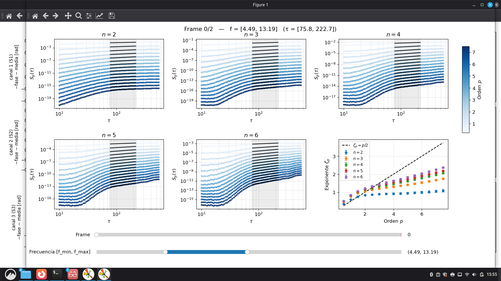
- [15:57] Scaling del JONSWAP regenerado con τ ∈ [75,8, 222,7] ms (estilo póster, convergencia en τ = 130 ms): n = 2 → ζ3 = 0,89, ζ6 = 0,99 ± 0,01 (saturación tipo Burgers). n = 3 → ζ6 = 1,54 ± 0,01. n = 4 → ζ6 = 1,79 ± 0,02. Figuras en
Análisis/JONSWAP_BONNETON_395/funciones_estructura/canal_1_tau_75.8-222.7/. [15:59] El usuario: “En Bonneton están pero re convergidas las funciones de estructura”. Comparación de la convergencia (canal 1, n = 3, p = 6):
Medición τ [ms] ε (últimas 10 ventanas) máx. desvío desde T = 200 s JONSWAPBONNETON395 130 1,9 % 11 % JONSWAPBONNETON395 201 2,6 % 13 % muchosforzados395 201 9,5 % 59 % Canal365muchosforzados 201 5,2 % 24 % Con el JONSWAP (forzado estacionario de banda continua) Sp converge ~4–5× mejor que con la secuencia de 10 curvas random (con eventos grandes que dominan los momentos altos y una tendencia lenta).
[16:04] Cuarta prueba — muchosforzados360soft: análisis rápido
muchos_forzados_360_soft.bin(h = 3,60 cm en el punto de referencia, PID soft, 660 s). Lock-in con los tres canales en paralelo: 1,8 min. Análisis en t ∈ [60, 600] s (en la RMS no se ve el choque del final; se corta para ir a lo seguro).- Std de la fase c1/c2/c3: 0,0037 / 0,0044 / 0,0084 rad, casi igual que en la primera prueba (~3,1 cm de referencia: 0,0040 / 0,0044 / 0,0083). En 3,95 cm era 0,0063 / 0,0054 / 0,0091.
- Espectro E/Ẽ del canal 1: el mejor ajuste del día (rms 0,043). Distancia 0,135 s, prominencia 0,015 cm, ajuste en (25, 80) rad/s → fm = 2,19 Hz, ων = 28,6 ± 0,7 rad/s, RB = 82. El barrido da ων = 28,5–29,5 rad/s y RB = 76–110 en todos los buenos.
- ¿Llenar más antes del JONSWAP nuevo? El Bonneton nuevo se escaló para h = 4,15 cm en la paleta, que corresponde a 3,60 cm en el punto de referencia si este está del lado opuesto (+0,55 cm). Es el nivel actual: no hace falta llenar. Si se llena a 3,95 hay que regenerarlo para ~4,5 cm en la paleta.
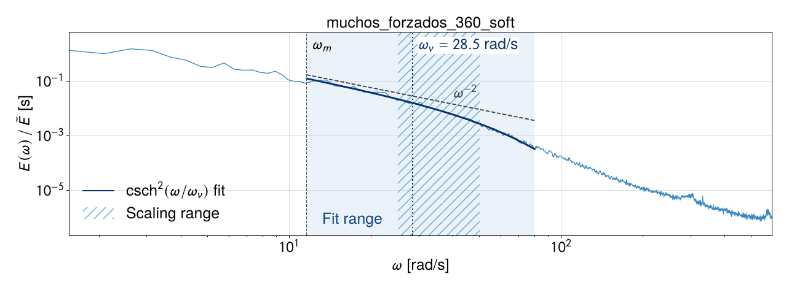
- [16:05] 3,60 cm, ωm un poco más a la izquierda (pedido del usuario): distancia 0,2 s, prominencia 0,02 cm, ajuste en (25, 80) rad/s → 999 frentes, Tm = 0,541 s, fm = 1,85 Hz (ωm = 11,6 rad/s), ων = 28,5 ± 0,6 rad/s, RB = 97, rms 0,044. Reemplaza a la figura anterior.
[16:06] Conclusión: h = 3,60 cm es el nivel que mejor funciona → JONSWAP de Bonneton con esta altura
- Conclusión: con h = 3,60 cm (en el punto de referencia, el mismo de la Segunda iteración) el espectro del canal 1 sigue mejor la forma de Bonneton (csch²). Es el mejor ajuste del día (rms 0,043–0,044, contra 0,061–0,108 en 3,1 y 3,95 cm) y es robusto: en el barrido, ων = 28,5–29,5 rad/s. Con ωm = 11,6 rad/s: ων = 28,5 ± 0,6 rad/s, RB = 97.
- Decisión: no se llena más. Se mide el JONSWAP de Bonneton escalado (
599962ms_bonneton_C3_h_4.15cm_Tp_0.49_Hm0_8.9mm_seed_1_fhi_2.5fp_una_curva.csv: Tp = 0,487 s, Hm0 = 8,9 mm, 600 s) con este nivel y PID stiff. Se escaló para 4,15 cm en la paleta, que corresponde a 3,60 cm en el punto de referencia si este está del lado opuesto a la paleta (+0,55 cm por la inclinación).
[16:08] Bonneton de 30 min o más sin que el motor vuelva a 0
- Problema: la curva única de 10 min empieza y termina en x = 0, así que en loop el motor vuelve a 0 cada 10 min. Una sola curva de 30 min necesitaría ~48 000 puntos (> 16 000) o un dt demasiado grande.
- Solución: tres curvas (
generador_curvas_jonswap.py --escalado --h-paleta 0.0415 --f-hi-frac 2.5 --loop --dt 0.0375), enCurvas_jonswap/bonneton_C3_h_4.15cm_Tp_0.49_Hm0_8.9mm_seed_1_fhi_2.5fp_loop/:10012ms_curva_00_entrada_…csv(268 puntos): rampa de 0 al centro, termina donde empieza el bloque.599962ms_curva_01_bloque_loop_…csv(16 000 puntos): bloque JONSWAP periódico (último punto = primero, velocidad continua). Se repite consigo mismo sin saltos.10012ms_curva_02_salida_…csv(268 puntos): rampa de vuelta a 0.- Empalmes verificados: salto de posición 0 mm; velocidad −1,2 → −0,7 mm/s entre puntos vecinos (continua).
- Command Table: entrada → wait → bloque → wait → bloque → wait → bloque → wait → salida → wait (≈ 30 min 20 s). Para más tiempo, más repeticiones del bloque. Ojo: el bloque repetido es la misma realización de 600 s (como el ciclo de 147 s de la Segunda iteración).
- Pendiente: copiar al pendrive (estaba desconectado).
- [16:10] Corrección: el drive tiene un límite de 16 000 puntos en total en memoria, sumando todas las curvas. Repetir una curva en la Command Table no ocupa memoria nueva, así que el loop sirve igual, pero las tres curvas tienen que sumar ≤ 16 000. Bloque regenerado con 15 464 puntos (579,86 s): entrada 268 + bloque 15 464 + salida 268 = 16 000. Archivos:
10012ms_curva_00_entrada_…,579862ms_curva_01_bloque_loop_…,10012ms_curva_02_salida_…. Con 3 repeticiones: 10 + 3 × 580 + 10 ≈ 29,3 min; con 4, ≈ 39 min. - Una curva única de 30 min con 16 000 puntos (dt = 112,5 ms) queda muy submuestreada: 4,3 puntos por período en fp, la interpolación lineal se come el 16 % de la amplitud en fp y el 53 % en 2·fp, y aparece una imagen espuria en 6,8 Hz. 60 min es imposible (el Nyquist cae en 1,08·fp). Se descarta.
[16:13] Profundidad real en la paleta
- La paleta está sumergida 2,5 cm. Con el hueco de ~1 cm entre la paleta y el fondo (montaje de la mañana), la profundidad en la paleta sería ~3,5 cm, no los 4,15 cm supuestos (3,6 + 0,55 por la inclinación). Eso indica que el punto de referencia (3,6 cm) está del lado de la paleta. A confirmar el hueco antes de regenerar el Bonneton.
- Las semillas distintas para juntar estadística (varias corridas de 10 min) quedan para otro momento.
- [16:14] Confirmado: hueco de ~1 cm → h = 3,5 cm en la paleta. Bonneton definitivo para este nivel (kp·h = 0,951 y ξ0 = 0,226 de vN03-C3): Tp = 0,447 s (fp = 2,24 Hz), Hm0 = 7,5 mm, γ = 3,3, banda hasta 2,5·fp = 5,6 Hz, dt = 37,5 ms (12 puntos por período en fp). Paleta en 0–62 mm, |a| ≤ 1,7 m/s².
- 10 min:
Curvas_jonswap/bonneton_C3_h_3.5cm_Tp_0.45_Hm0_7.5mm_seed_1_fhi_2.5fp_una_curva/599962ms_…csv(16 000 puntos). - Loop:
…_fhi_2.5fp_loop/, con entrada (268) + bloque periódico de 580 s (15 464) + salida (268) = 16 000 puntos. - Obsoletas: las versiones
h_4.15cm(suponían el punto de referencia del lado opuesto). La de 10 min de 4,15 cm está en el pendrive: no usarla. - Pendiente: copiar al pendrive.
- 10 min:
- [16:15] El usuario prefiere una única curva, sin loop. Se borraron (archivo por archivo) las carpetas
…_loopde 3,5 y 4,15 cm. La curva a usar esbonneton_C3_h_3.5cm_Tp_0.45_Hm0_7.5mm_seed_1_fhi_2.5fp_una_curva/599962ms_…csv(10 min, 16 000 puntos). El modo--loopsigue disponible en el generador.
[16:17] Bonneton h = 3,5 cm: verificación contra vN03-C3 y copia al pendrive
| Parámetro | vN03-C3 | Nuestro | Comentario |
|---|---|---|---|
| kp·h | 0,951 | 0,951 | igual (escala de Froude λ = h/h0 = 0,05 → Tp = 0,447 s) |
| ξ0 | 0,226 | 0,226 | igual (se eligió conservar este) |
| γ (JONSWAP) | 3,3 | 3,3 | igual |
| pendiente | 0,0286 | 0,0350 | distinta (rampa 1:28,6 vs 1:35) |
| Hm0/h | 0,143 | 0,214 | distinta: con otra pendiente no se pueden conservar ξ0 y Hm0/h a la vez |
| s0p = Hm0/L0p | 0,016 | 0,024 | distinta (idem) |
| Ursell | 6,2 | 9,4 | más no lineal |
- El η objetivo da Hm0 = 4σ = 7,43 mm (pedido 7,5) con el pico en 2,236 Hz = fp. Banda generada [0,5, 2,5]·fp: le falta la cola por encima de 5,6 Hz (vN03 no la corta).
- Diferencias que no se escalan: paleta lineal sin compensación de reflexión (vN03 usa pistón de 2.º orden con ARC), amplitudes determinísticas, y capilaridad: en fp afecta el número de onda 0,3 % (L = 23 cm), en 2,5·fp 8,9 % (L = 5,5 cm).
- Si se quisiera conservar Hm0/h en vez de ξ0: Hm0 = 5,0 mm (ξ0 = 0,28).
- Copiada al pendrive (
Curvas_jonswap/bonneton_C3_h_3.5cm_…_una_curva/, verificada condiff). En el pendrive sigue la obsoleta deh_4.15cm.
[16:21] Recapitulación del día y pendientes
Mediciones (todas en Tres sensores/Mediciones/, lock-in en Mediciones analizadas/, análisis en Análisis/<nombre>/)
| Medición | Forzado | h ref. | Análisis | ων [rad/s] (c1) | RB | Estado del análisis |
|---|---|---|---|---|---|---|
| Canal365muchosforzados | Curvasrandom3 | ~3,1 cm | t = 60–480 s | 33,7 ± 2,2 | 94 | completo, en pausa (Sp no converge) |
| muchosforzados395 | Curvasrandom3 | 3,95 cm | t = 60–750 s | 25,7 ± 0,7 | 57 | completo |
| JONSWAPBONNETON395 | Bonneton h20cm (mal escalado) | 3,95 cm | t = 60–655 s | 25,5 ± 1,6 | 69 | completo |
| muchosforzados360soft | Curvasrandom3, PID soft | 3,60 cm | t = 60–600 s | 28,5 ± 0,6 | 97 | espectro listo; Sp e Iribarren corriendo |
Conclusiones hasta ahora
- El piso de ruido bajó ~16–20× (canales 1 y 2) y ~120–140× (canal 3) respecto de 10forzados.
- ων (canal 1) es robusto ante los parámetros; RB depende de la detección de frentes (ωm). ων depende de la posición del sensor respecto de la rompiente (nivel).
- h = 3,60 cm es el mejor nivel (mejor ajuste de la csch²). Bonneton escalado para 3,5 cm en la paleta (Tp = 0,447 s, Hm0 = 7,5 mm), cargado en el pendrive.
- Sp converge bien con el JONSWAP (estacionario). Con los random hay tendencias y eventos dominantes.
Pendientes
[ ]Medir el Bonneton de 3,5 cm (PID stiff).[ ]Calibración (sobrellenar y vaciar): hace falta para Iribarren, νc, umbrales en cm y para comparar alturas con 10forzados (la fase es ~2× más chica a 3,95 cm).[ ]Ruido en agua quieta con los 3 sensores, intercambiando entradas del DAQ (+ opcional: canal 3 en corto).[ ]Origen de la deriva lenta común a los 3 canales (¿nivel?, ¿temperatura?, ¿electrónica?): medir el nivel al final y la deriva con la paleta quieta.[ ]Videos con otra iluminación.[ ]Sensores cerca de la rompiente (escalado con Burgers).[ ]Más estadística con el JONSWAP: varias corridas de 10 min con semillas distintas.[ ]Custom de Tp = 10 s: para otro momento.[ ]Borrar del pendrive el Bonneton obsoletoh_4.15cm.[ ]Confirmar las profundidades locales sobre cada sensor (inclinación y lado del punto de referencia).
[16:22] Medición de ruido en agua quieta
- 3 minutos con los tres sensores en agua quieta (h = 3,60 cm en el punto de referencia), con la configuración normal de entradas del DAQ.
- [16:27] Observación del usuario: con el Bonneton y con menos altura de agua hay menos rebotes en la cuba.
[16:31] Ruido en agua quieta (ruido.bin, 180 s, h = 3,60 cm): resultados
- Portadora (61,3 kHz): canales 0/1/2/3 = 9,16 / 1,90 / 2,09 / 0,60 V. En 10forzados: 8,77 / 1,70 / 1,83 / 1,95 V. El sensor 3 da hoy ~3× menos portadora que los otros (antes era igual).
- Piso de tensión cruda (±2–20 kHz de la portadora): 7,4e-12 / 2,3e-11 / 3,9e-12 V²/Hz (canales 1/2/3). En 10forzados: 6e-11 / 2e-10 / 1,9e-9. El ruido de banda ancha del canal 3 desapareció (~500× menos). Hoy el canal 3 es el de menor piso.
- Fase: piso 60–120 Hz de 1,35e-11 / 1,44e-11 / 5,6e-11 rad²/Hz. El canal 3 tiene ~4× más ruido de fase que el 1 solo porque tiene menos portadora (ruido de fase ∝ piso/A²: se predicen ~5×).
- En altura (calibración vieja): piso instrumental (> 100 Hz) ~1,5e-13 m²/Hz = 1,5e-9 cm²/Hz, contra ~2e-8 (canales 1 y 2) y ~1e-6 cm²/Hz (canal 3) en 10forzados.
- El agua no está del todo quieta: hay una seiche en ~0,08 Hz (std de la fase 0,0006 rad ≈ 0,09 mm) y un nivel residual de ~3–4e-13 m²/Hz entre 1 y 50 Hz, por encima del piso instrumental. rms para f > 0,5 Hz: 0,025 / 0,042 / 0,079 mm.
- Señal/ruido en el canal 1: > 10 hasta ~22–36 Hz (según la medición) y > 3 hasta ~40–50 Hz. Más arriba, piso + líneas de red (50 Hz y armónicos, 500–510 Hz).
- Pendiente: la prueba intercambiando entradas ya no es tan urgente (el exceso del canal 3 se fue). Queda entender por qué el sensor 3 da 3× menos portadora (¿acople o impedancia con agua destilada?, ¿cable?). Si se sube, el ruido de fase del canal 3 baja ~10×.
[16:31] Pendiente de la cola del espectro después de la csch² (canal 1)
Ajuste de ley de potencias Sη ∝ fα (Welch 4 s):
Medición 5–10 Hz 10–20 Hz 15–30 Hz 20–40 Hz S/N = 10 en JONSWAPBONNETON395 −4,4 −4,8 −3,9 −3,4 22 Hz muchosforzados360soft −3,6 −4,1 −4,0 −3,3 24 Hz muchosforzados395 −3,8 −4,6 −4,4 −3,8 36 Hz - Entre 10 y 30 Hz la cola es ≈ ω⁻⁴ (como turbulencia de ondas de gravedad 2D, Zakharov–Filonenko). Por encima de ~20 Hz se aplana a −3,3/−3,9, hacia −17/6 ≈ −2,83 (capilar 2D), pero ahí ya se acerca al piso y no se puede afirmar. Transición gravedad–capilar del agua: ~13,6 Hz (λ = 1,7 cm).
- El “−2 después de ~30 Hz” que se veía en junio coincide con donde el piso de ruido de 10forzados (10× más alto) cortaba los espectros. Probablemente era ruido, a revisar.
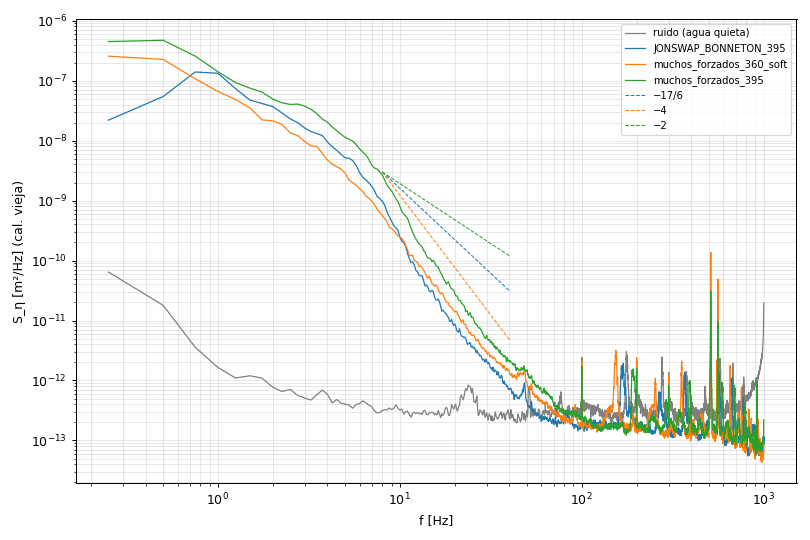
[16:31] muchosforzados360soft — Iribarren, scaling y convergencia (canal 1, t ∈ [60, 600] s)
- Iribarren S3 (11 bins hasta 0,8, D = 3,5 cm, calibración vieja): 1416 olas, ⟨ξ⟩ = 0,287, σ = 0,357 ± 0,010, μ = −1,273 ± 0,016, spilling 95,8 %. Muy parecido a muchosforzados395.
- Convergencia (n = 3, p = 6): ε = 5,2 % (τ = 201 ms) y 7,0 % (τ = 130 ms); máximo desvío desde T = 200 s: 10–14 %. Converge bien, a diferencia de los otros random (24–59 %), y parecido al JONSWAP (11–13 %).
- ζ (n = 3): τ ∈ [83,8, 482] ms → ζ3 = 1,27. τ ∈ [75,8, 222,7] ms → ζ3 = 1,57. Figuras en
Análisis/muchos_forzados_360_soft/funciones_estructura/.
[16:37] ¿Qué tanto se parece al JONSWAP el espectro del canal 3? (JONSWAPBONNETON395)
- Pedido en la paleta: fp = 0,935 Hz, γ = 3,3, Hm0 = 42,9 mm (curva
h_20cm, diseñada para 20 cm de profundidad). - Canal 3 (x = 3 cm desde el inicio de la rampa), calibración vieja: no se parece.
- Hm0 = 3,7 mm (lineal se esperaban ~17–19 mm para h ≈ 4 cm; ver la calibración).
- Energía: 32 % en 0,5–1,5 fp, 55 % en 1,5–2,5 fp, 10 % por encima. El máximo está en 1,92 Hz ≈ 2·fp. Hay un hueco justo en fp (~0,85–0,95 Hz) y una joroba ancha en 1–2,2 Hz.
- Un JONSWAP ajustado alrededor de fp da fp = 0,78 Hz, γ → 1 y un residuo de un factor ~5: no describe la forma.
- La cola entre 2,5 y 6 fp cae como f^−4,7 (JONSWAP: −5).
- Interpretación: la curva estaba escalada para 20 cm. Con ~4 cm el forzado es muy no lineal (Ursell ~100): la energía pasa al segundo armónico (ligado y libre, sin generación de 2.º orden en la paleta) y el pico pierde forma. El hueco en fp podría ser un nodo de onda estacionaria por reflexión (a revisar). El Bonneton nuevo escalado para 3,5 cm (Ursell 9,4) debería parecerse mucho más: verificar en S3 cuando se mida.
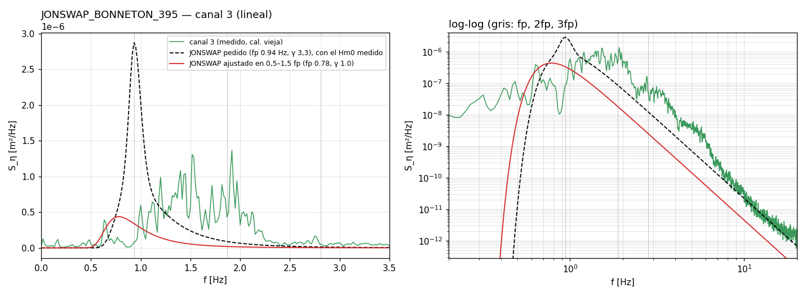
- [16:39] ¿Por qué se ensancha y se corre a frecuencias altas en S3? Distancia paleta–S3: ~28–34 cm (no 10), o sea ~0,5 L en fp (L = 61–65 cm, kh ≈ 0,37). Es poco para transferencias resonantes, que necesitan varias L. Explicación más probable: no linealidad local enorme desde la paleta.
- Con la curva de 20 cm, a ~4 cm de profundidad: Hm0 lineal ≈ 16–18 mm → Hm0/h ≈ 0,45. La ola máxima (~1,9·Hm0 ≈ 31–33 mm) supera el límite de rotura 0,78 h ≈ 27–31 mm: las olas grandes rompen al salir de la paleta.
- Armónico ligado de 2.º orden (Stokes, aguas someras): a2/a1 ≈ 3ka/[4(kh)³] ≈ 1,1–1,4. El “segundo armónico” es tan grande como el fundamental desde el principio (ondas cnoidales/solitarias): no hace falta propagar para tener la energía en 2fp.
- Además: la paleta lineal genera armónicos libres espurios; la rotura convierte energía en frentes empinados (cola ancha) y la disipa (Hm0 medido ≪ lineal); y el hueco en fp podría ser un nodo de onda estacionaria por reflexión.
- Con la curva de 3,5 cm (Hm0 = 7,5 mm, Hm0/h = 0,21, Ursell 9,4) esto debería mejorar mucho.
[16:43] Quinta prueba — Bonneton escalado para h = 3,5 cm en la paleta (3,60 cm de referencia)
Bonneton_bien_profundidad_360.bin(660 s), con la curva599962ms_bonneton_C3_h_3.5cm_Tp_0.45_Hm0_7.5mm_seed_1_fhi_2.5fp_una_curva.csv(Tp = 0,447 s, Hm0 = 7,5 mm, γ = 3,3), PID stiff. Copiada del pendrive y lock-in en paralelo.- [16:45] Resultados de
Bonneton_bien_profundidad_360:- El forzado arranca a ~45 s (rampa hasta ~55 s) y termina a ~640 s. Análisis en t ∈ [60, 635] s.
- El canal 3 ahora sí se parece al JONSWAP (
Análisis/comparar_jonswap.py, Welch 30 s, calibración vieja): 93 % de la energía en 0,5–1,5 fp (antes 32 %), pico en 2,03 Hz = 0,91 fp. JONSWAP ajustado: fp = 1,99 ± 0,02 Hz, γ = 3,1 ± 1,4 (pedido: 2,24 Hz y 3,3), Hm0 = 3,4 mm (pedido 7,5; calibración vieja). La cola cae como f^−6,7 por encima de 2,5 fp porque la banda generada se corta en 2,5 fp. - Diferencias: el pico está corrido ~9 % hacia abajo y hay un hueco angosto justo arriba de fp (~2,3 Hz), con otros en ~3,4 y ~4,4 Hz (separación ~1 Hz). Un peine con Δf ≈ 1 Hz equivale a un retardo de ~1 s, que es ida y vuelta a la paleta (~0,3 m a √(gh) ≈ 0,59 m/s). Hipótesis: interferencia con la onda reflejada en la paleta.
- Canales 2 y 1: Hm0 = 1,5 y 0,96 mm (cal. vieja), 91 % y 67 % de la energía alrededor de fp. En S1 crecen la cola (pendiente −3,8) y la parte de baja frecuencia (7 %): ya hay rotura.
- Espectro E/Ẽ del canal 1, con ωm ≈ ωp (distancia 0,2 s, prominencia 0,03 cm, ajuste en 22–80 rad/s): fm = 2,19 Hz, ων = 32,4 ± 5,9 rad/s, RB = 93, rms 0,115. Peor determinado que con muchos forzados a 3,60 cm (28,5 ± 0,6), pero compatible.
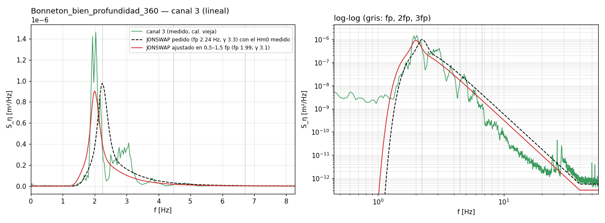
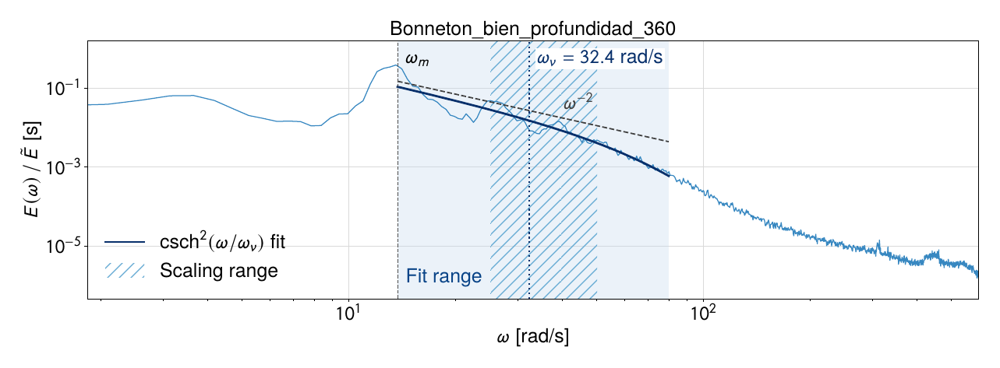
[16:46] Bonneton nuevo vs el de la mañana: amplitud
Hm0 = 4ση (calibración vieja, sin < 0,3 Hz):
Medición S3 [mm] S2 [mm] S1 [mm] S1/S3 Carrera de la paleta (rms / p1–p99) JONSWAPBONNETON395 (h20cm) 3,8 2,0 1,7 0,45 10,6 / 49 mm Bonnetonbienprofundidad360 3,4 1,5 1,0 0,29 1,9 / 9 mm - La paleta se mueve ~5,5× menos, pero en S3 la ola es solo ~10 % más chica: con la curva de la mañana la mayor parte de la energía se perdía rompiendo junto a la paleta (saturación H/h). La diferencia está en S1 (1,0 contra 1,7 mm).
- El usuario prefiere el resultado anterior. Lo esperado sería un espectro JONSWAP en S3 sin rastros en S1 (transformado en espectro de bores). Hoy S1 todavía tiene el 67 % de la energía alrededor de fp.
- Opciones: subir Hm0 manteniendo Tp (baja ξ0, rompe antes) o mover los sensores hacia la rompiente.
- Pendiente para mañana: cambiar el setup, mover los sensores y medir con los tres cerca del rompimiento.
- [16:47] Iribarren de S3,
Bonneton_bien_profundidad_360(11 bins hasta 0,8, D = 3,5 cm, calibración vieja): 1427 olas, ⟨ξ⟩ = 0,36, σ = 0,219 ± 0,004, μ = −1,033 ± 0,006, spilling 92 % / plunging 8 %. Está entre el random (0,28–0,29, 96 %) y el JONSWAP de la mañana (0,43, 78 %). Ojo: el ξ0 de diseño (0,226) es el de aguas profundas con Hm0; acá ξ es ola por ola con H/L local.
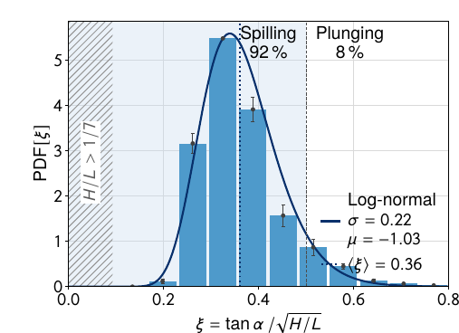
[16:50] Bonneton con más amplitud (Hm0 ×1,6)
- Los sensores hoy quedan donde están. Se pide una versión de Bonneton con más amplitud, más parecida a la de la mañana, aunque cambie RB.
Curvas_jonswap/bonneton_C3_Hm0x1.6_h_3.5cm_Tp_0.45_Hm0_12.0mm_seed_1_fhi_2.5fp_una_curva/599962ms_…csv(en la compu y en el pendrive). Generada con--tp 0.4472136 --hm0 0.012 --gamma 3.3 --h-paleta 0.035 --f-hi-frac 2.5 --una-curva --dt 0.0375.- Igual que vN03: kp·h = 0,951, γ = 3,3, Tp = 0,447 s.
- Cambia: Hm0 = 12 mm (antes 7,5), ξ0 = 0,179 (vN03: 0,226), Hm0/h = 0,34, Ursell = 15.
- Ola máxima ≈ 1,9·Hm0 ≈ 23 mm < 0,78·h ≈ 27 mm: no debería romper junto a la paleta. El techo para eso es Hm0 ≈ 14 mm.
- Paleta: carrera rms 3,0 mm, p1–p99 = 14 mm (antes 1,9 y 9 mm; la de la mañana 10,6 y 49 mm), |a| ≤ 2,7 m/s².
- [16:55]
Bonneton_bien_profundidad_360, canal 1: borde superior del ajuste alargado de a 5 rad/s mientras mejore R² (R² en log10 de E/Ẽ; distancia 0,2 s, prominencia 0,03 cm, borde inferior 22 rad/s). R² sube de 0,949 (80) a 0,970 en 105 rad/s y baja en 110. Elegido (22, 105) rad/s: ων = 32,4 ± 4,8 rad/s, RB = 93. ων prácticamente no cambia (32,37 → 32,43); la incerteza baja de 5,9 a 4,8.
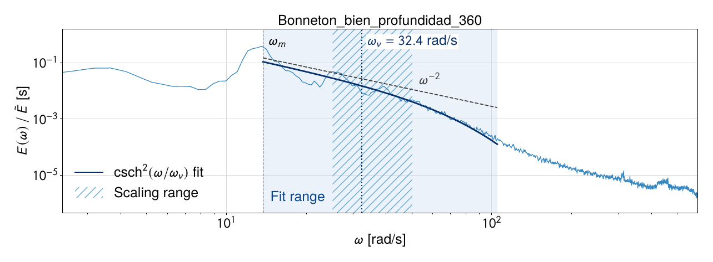
[16:56] Idea para el futuro: evitar los rebotes
- Pasiva: poner al final de la rampa algo tipo compuerta que deje pasar las olas en un solo sentido (hacia el fondo) y no las devuelva. Un absorbedor pasivo, para que no vuelvan reflexiones hacia la zona de medición ni hacia la paleta.
- Activa (alternativa): un compensador con un sensor de altura y el segundo motor controlado tipo PID, que absorba activamente la onda que llega (como el ARC de la paleta de vN03).
- Motivación: los huecos tipo peine en el espectro de S3 (Δf ≈ 1 Hz, compatible con ida y vuelta a la paleta) y los “rebotes” que se ven en la cuba, más notorios con más agua.
[17:03] Bonneton 3,5 cm: scaling con el rango donde n = 2 satura en 1
- Con los rangos anteriores el scaling daba raro: τ ∈ [83,8, 482] ms → ζ negativos (Sp baja para τ ≳ Tp/2 ≈ 220 ms). τ ∈ [75,8, 222,7] → n = 2 con ζ6 = 0,50 < ζ3. La convergencia, en cambio, es excelente (máx. desvío 2–3 %).
- Nuevo
Análisis/rango_saturacion.py: recorre todas las ventanas [τa, τb] de la grilla (ancho ≥ ×1,5, ≥ 5 puntos) y minimiza la media de (ζp(2) − 1)² para p ∈ [3, 6]. Hay una meseta clara en τ ≈ 60–160 ms. - Elegido τ ∈ [63,0, 158,3] ms (f ∈ [6,3, 15,9] Hz), ×2,5 de ancho, rms(ζ−1) = 0,006:
- n = 2: ζ3 = 0,998, ζ4 = 1,010, ζ6 = 0,995 ± 0,011 → satura en 1 (Burgers).
- n = 3: ζ3 = 1,58, ζ6 = 2,08. n = 4: ζ3 = 1,80, ζ6 = 2,59 (crecen casi lineal).
- Convergencia en τ = 100 ms: ε(n = 3, p = 6) = 1,0 %, máx. desvío desde T = 200 s: 2 %.
- También
correr_poster.py sp_calcular --n-max 4(solo n = 2, 3, 4; ~2× más rápido). La batería ya lo usa.
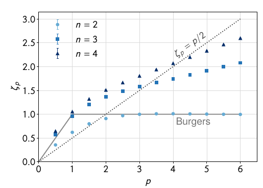
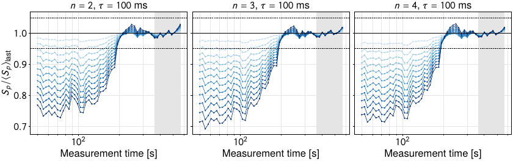
[17:14] Sexta prueba — Bonneton ×1,6 (Hm0 = 12 mm): Bonneton_custom_360.bin
- Curva
599962ms_bonneton_C3_Hm0x1.6_h_3.5cm_Tp_0.45_Hm0_12.0mm_…csv, h = 3,60 cm de referencia, PID stiff, 660 s. El forzado va de ~35 s a ~635 s; análisis en t ∈ [50, 625] s. Hm0 (calibración vieja) contra el Bonneton de 7,5 mm:
Sensor Bonneton 7,5 mm Bonneton ×1,6 Cociente S3 3,36 mm 5,20 mm ×1,55 S2 1,52 mm 2,27 mm ×1,49 S1 0,96 mm 1,06 mm ×1,10 En S3 crece como el forzado (×1,6). En S1 casi no cambia: altura saturada por la profundidad local, como se espera en la inner surf zone (H ∝ h). S1 está dentro de la zona de rompientes.
- Canal 3 contra el JONSWAP: 91 % de la energía en 0,5–1,5 fp, ajuste fp = 1,96 Hz, γ = 2,6 ± 1,1. Forma de JONSWAP, con el mismo corrimiento del pico (~0,9 fp) y los mismos huecos que con 7,5 mm.
- Canal 1: 62 % alrededor de fp, 14 % por debajo de 0,5 fp (antes 7 %: aumenta la baja frecuencia, ¿setup u ondas largas?), cola −3,7.
- Espectro E/Ẽ del canal 1 (ωm cerca de ωp y borde superior alargado mientras mejore R²): distancia 0,2 s, prominencia 0,05 cm, ajuste en (22, 85) rad/s → fm = 2,09 Hz, ων = 30,4 ± 2,1 rad/s, RB = 91, R² = 0,982 (Bonneton de 7,5 mm: 32,4 ± 4,8, R² = 0,970).
- Iribarren de S3: ⟨ξ⟩ = 0,285, σ = 0,221, μ = −1,279, spilling 99 % (con 7,5 mm: 0,36 y 92 %).
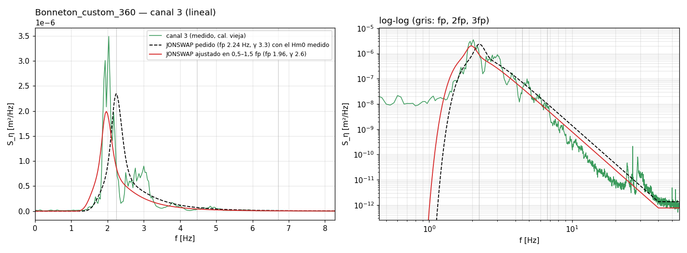
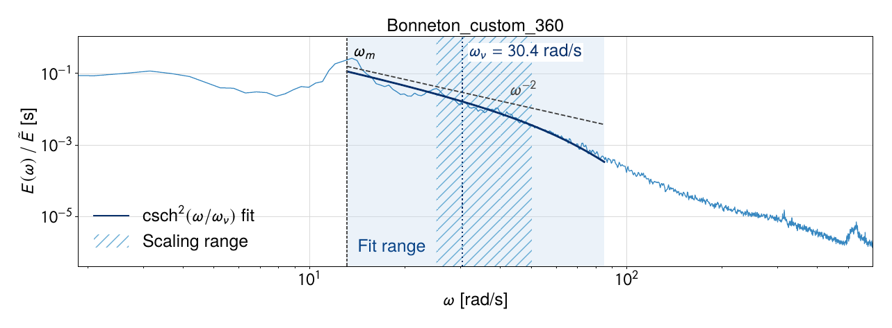
[17:16] Recapitulación de mediciones (antes de la calibración)
| # | Medición | Forzado | h ref. | Análisis [s] | ων c1 [rad/s] | RB | Notas |
|---|---|---|---|---|---|---|---|
| 1 | Canal365muchosforzados | random3 | ~3,1 | 60–480 | 33,7 ± 2,2 | 94 | tope del motor; Sp no converge |
| 2 | muchosforzados395 | random3 | 3,95 | 60–750 | 25,7 ± 0,7 | 57 | deriva lenta; Sp no converge |
| 3 | JONSWAPBONNETON395 | Bonneton h20cm (mal escalado) | 3,95 | 60–655 | 25,5 ± 1,6 | 69 | S3 no es JONSWAP (energía en 2fp) |
| 4 | muchosforzados360soft | random3, PID soft | 3,60 | 60–600 | 28,5 ± 0,6 | 97 | mejor ajuste de la csch²; se chocó |
| 5 | ruido | agua quieta, 180 s | 3,60 | 10–175 | — | — | piso ~10× menor que en junio; S3 con 3× menos portadora |
| 6 | Bonnetonbienprofundidad360 | Bonneton 3,5 cm, Hm0 7,5 mm | 3,60 | 60–635 | 32,4 ± 4,8 | 93 | S3 ≈ JONSWAP; n = 2 satura en 1 con τ = 63–158 ms |
| 7 | Bonnetoncustom360 | Bonneton ×1,6, Hm0 12 mm | 3,60 | 50–625 | 30,4 ± 2,1 | 91 | S1 saturado (H ∝ h); Sp calculándose |
- Arranca la calibración (sobrellenar con ~20 L y vaciar de a poco).
- [17:17] Preferencia del usuario: el Bonneton que más le gustó es el de la curva
h_20cm(JONSWAP_BONNETON_395, h = 3,95 cm). Tiene la mayor amplitud en S1 (Hm0 ≈ 1,7 mm, cal. vieja) y Sp bien convergido. En contra: no es comparable a vN03 en adimensionales (escalado para 20 cm), las olas rompen junto a la paleta y en S3 la energía está en 2fp, no es un JONSWAP.
[17:40] Calibración: plan de análisis
- Fotos de la regla en cada escalón (pasando por Bluetooth). Hay escalones con más de una foto (se detectan por correlación). De cada foto: calibrar px→mm con la regla y detectar dónde toca la línea de agua, a un par de píxeles a izquierda y derecha. Así la altura sale con mejor resolución que la lectura a ojo. Guardar cada imagen con la línea detectada dibujada, para verificar.
- Archivo
calibracionen el pendrive: ignorar el transitorio del principio (se esperó ~1 min antes de empezar), detectar los plateaus y asociarlos a las alturas de las fotos. - Al final siguió midiendo mientras se volvía a llenar la cuba: se puede sacar la velocidad de llenado. Ojo: el tanque con el que se rellenó estaba casi vacío (menos presión que lleno).
[17:48] Calibración de la Tercera iteración: resultados
- Fotos de la regla:
Tercera iteración/Calibracion/Fotos regla/(15 fotos +analizar_fotos.py,resumen.csv,escalones.csvy*_linea.jpgcon la línea detectada). Escala: ~58 px/mm, o sea 0,017 mm/px. Línea de agua: línea oscura de contacto con el vidrio, medida a cada lado de la regla (mediana robusta de las columnas cercanas). La altura se interpola entre las dos marcas de mm vecinas, así no importa la diferencia de escala entre aire y agua. Fotos repetidas detectadas por correlación (> 0,99) y Δh < 0,05 mm. - 9 escalones: 44,11 (3 fotos) / 43,25 / 42,48 (2) / 41,65 / 40,83 (2) / 39,79 / 39,16 / 38,48 (2) / 37,93 (2) mm. Dispersión entre fotos repetidas: 0,006–0,06 mm. Izquierda y derecha difieren ~0,35 mm, sistemáticamente (perspectiva); se usa el promedio.
Calibracion.bin(864 s, empieza a las 17:19:34, cuando se toma la primera foto). Lock-in enCalibracion/Mediciones analizadas/. Fase de cada escalón: media de los 10 s antes de cada foto. La foto de t = 1 s (transitorio) se descarta.Ajuste lineal φ = A·h + B (
Calibracion/Ajuste/calibracion_tercera.json):Canal A [rad/cm] B [rad] residuo A nueva / A vieja (10forzados) 1 −0,01999 ± 0,00035 −0,49078 0,13 mm 0,29 2 −0,02070 ± 0,00036 −0,25524 0,13 mm 0,28 3 −0,04351 ± 0,00081 +0,36946 0,14 mm 0,71 - Consecuencia: con agua destilada los sensores son ~3,5× menos sensibles (canales 1 y 2) y ~1,4× (canal 3). Todas las alturas calculadas hoy con la calibración vieja estaban subestimadas ×3,5 (S1, S2) y ×1,4 (S3). Explica la “fase la mitad” con el mismo montaje y por qué hubo que bajar la prominencia de los frentes: 0,015–0,05 cm “viejos” ≈ 0,05–0,17 cm reales (el póster usaba 0,15).
- ων y RB no cambian (no dependen de la escala). Hay que recalcular Hm0, Iribarren, νc y los umbrales.
- Velocidad de llenado (al final, rellenando con el tanque casi vacío): dh/dt ≈ 0,9–1,4 mm/min (canales 1 y 2, t = 760–860 s); canal 3 0,8–1,1.
- Deriva: en el primer escalón (nivel fijo, 44,1 mm) la fase del canal 3 baja ~3 mrad en ~100 s (~0,7 mm aparentes). Es la misma deriva lenta de las mediciones.
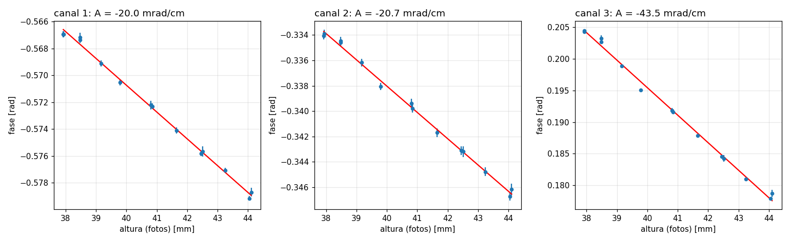
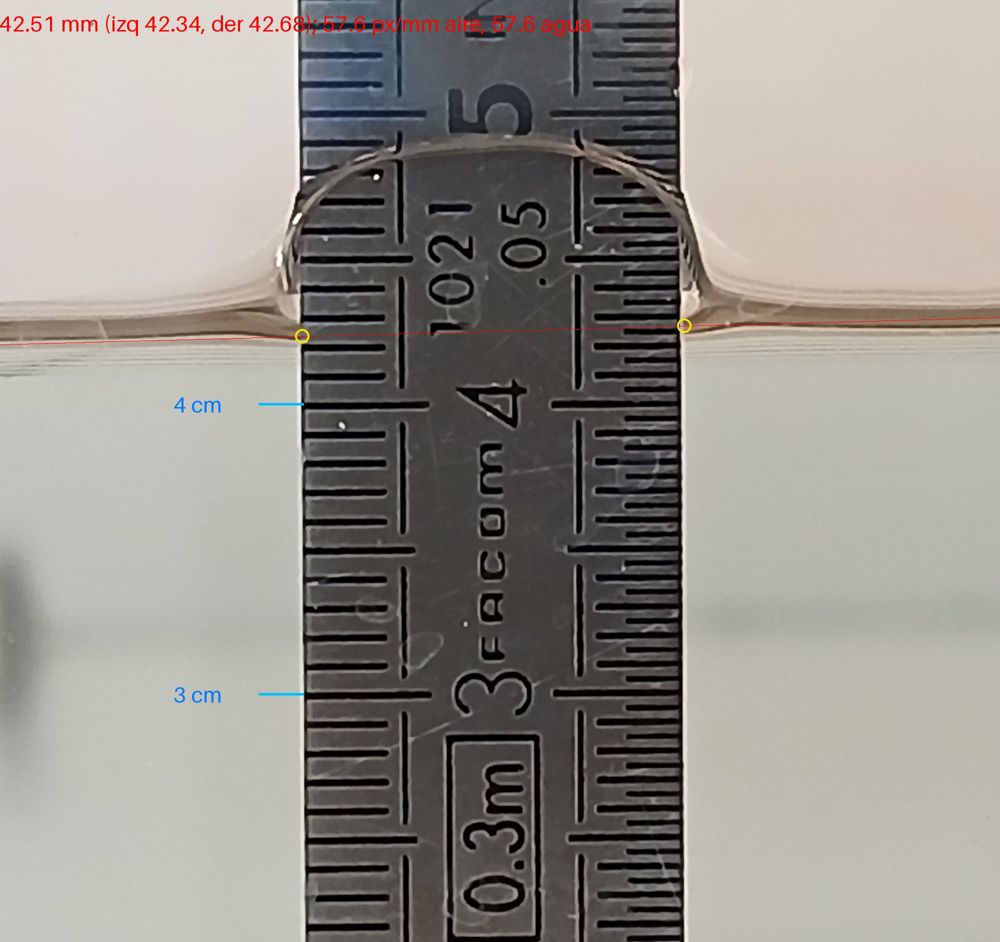
- [17:49] Bonneton ×1,6, scaling del canal 1 (Sp con n ≤ 4, t ∈ [50, 625] s): con el mismo rango que el Bonneton de 7,5 mm, τ ∈ [63, 158] ms, n = 2 satura en 1 (el mejor rango propio es 78–128 ms, con |ζ − 1| medio = 0,014). Figuras en
Análisis/Bonneton_custom_360/funciones_estructura/canal_1_tau_63.0-158.3/.
[17:50] Calibración: incerteza horizontal (alturas de las fotos) y comparación de pendientes
- Incerteza de la altura por foto, σh ≈ 0,05 mm:
- repetibilidad entre fotos del mismo escalón: 0,041 mm (6 grados de libertad);
- variación de la asimetría izquierda−derecha entre fotos: 0,026 mm. Su media, −0,35 mm, es un offset común: afecta B, no A;
- resolución (~0,2 px de 1/58 mm): 0,003 mm.
- Reajuste con errores en los dos ejes (ODR; σφ = std/√10 de la fase en los 10 s): las pendientes no cambian. χ²red = 4–7: hay dispersión extra, más que σh y σφ, compatible con la deriva lenta de la fase (~0,7 mm aparentes en 100 s) y con el desfase de relojes celular/PC.
| Canal | A vieja (10forzados) [rad/cm] | A nueva [rad/cm] | nueva/vieja | corrección de las alturas calculadas con la vieja |
|---|---|---|---|---|
| 1 | −0,0689 | −0,0200 ± 0,0003 | 0,291 ± 0,005 | ×3,44 |
| 2 | −0,0746 | −0,0208 ± 0,0004 | 0,279 ± 0,005 | ×3,59 |
| 3 | −0,0613 | −0,0437 ± 0,0008 | 0,713 ± 0,013 | ×1,40 |
(La incerteza del cociente solo incluye la de la pendiente nueva; la vieja no tiene error registrado.) Guardado en Calibracion/Ajuste/calibracion_tercera.json (A_odr, dA_odr, sigma_h_mm).
[17:56] Reporte en PDF de la Tercera iteración (13/10)
Tercera iteración/Reporte/reporte_tercera_iteracion.pdf(9 páginas, LaTeX; fuente.texyfiguras/). Resume montaje, forzados (comparación con vN03), análisis, ruido, calibración, alturas calibradas, espectros S3 contra JONSWAP, ajustes de Bonneton en S1, funciones de estructura y convergencia, Iribarren calibrado, problemas y pendientes.- Recalculado con la calibración nueva (
correr_poster.py --cal tercera): Iribarren de S3 en todas (los random dan ⟨ξ⟩ ≈ 0,23–0,24, igual que el póster) y νc = 2,4–5,4e-4 m²/s (póster 2,8e-4). Hm0 calibrados: crecen de S3 a S2 (asomeramiento) y caen en S1. - Sensibilidad de los sensores: lo más probable es la conductividad del agua destilada (~100× menor que la de la canilla). La deriva lenta podría ser temperatura → conductividad (~2 %/°C): medir conductividad y temperatura.
[17:59] Séptima y octava pruebas: Bonneton “bien” (7,5 mm) y ×1,6 con h = 3,95 cm
- Aprovechando que se volvió a llenar, se miden la curva
bonneton_C3_h_3.5cm…(Hm0 7,5 mm) y la ×1,6 (Hm0 12 mm) con 3,95 cm en el punto de referencia. La paleta queda ~0,35 cm más sumergida: h en la paleta ≈ 3,85 cm, y las curvas estaban escaladas para 3,5 cm.- Efecto (lineal) en la paleta: kp·h = 1,01 (diseño 0,951, +6 %), H/S = 0,99 (0,94), Hm0 ≈ 7,9 mm en vez de 7,5 (+6 %), Hm0/h = 0,206 (0,214). ξ0 no cambia (no depende de h). Cambio chico en la generación. Lo que más cambia es la posición de la rompiente respecto de los sensores: con más agua la ola rompe más cerca de la playa, como pasó entre 3,60 y 3,95 cm con los random (ων 28,5 → 25,7).
- [18:08] Reporte reestructurado (18 páginas): Montaje → Calibración → Ruido → Ensamblaje de forzados triangulares → JONSWAP → Comparación → Herramientas, problemas y pendientes. Figuras nuevas (
Reporte/figuras_reporte.py, calibración nueva): línea de tiempo de la calibración, series y espectros de η por familia con el ruido de cada sensor, S3/S2/S1 contra el JONSWAP calibrado, ζp y convergencia en el rango común τ ∈ [63, 158] ms para las 6 mediciones, Hm0 a lo largo de la rampa, ων y RB contra el nivel, y colapso de los 6 espectros de S1 sobre csch²(ω/ων) hasta ω ≈ 3ων. - Convergencia en τ = 100 ms (n = 3, p = 6, máx. desvío desde 200 s): random 29/60/16 %; JONSWAP h20cm 13 %; Bonneton 3,5 cm 2 %; ×1,6 11 %.
- [18:13] Figura de la calibración con los intervalos del ajuste sombreados (10 s antes de cada foto). En t ≈ 506 s (escalón de 39,79 mm) el intervalo cae sobre una fase que todavía sube: la foto se sacó antes de que el nivel se estabilizara. Explica que ese punto quede por debajo de la recta.
[18:16] Calibración por plateaus (en vez del momento de la foto)
- Los intervalos “10 s antes de cada foto” caían en cualquier lado: las fotos se sacaron justo antes de cada vaciado y el reloj del celular parece ~10 s adelantado respecto de la PC.
Nuevo
Calibracion/Ajuste/ajuste_plateaus.py: detecta los 8 escalones (mínimos de la derivada de la señal combinada) en t ≈ 115, 206, 286, 379, 456, 519, 569, 620 s. Los 9 plateaus son los tramos entre escalones (margen de 4 s) y se asignan en orden a las alturas de las fotos.Canal A (fotos) [rad/cm] A (plateaus) [rad/cm] cambio residuo 1 −0,02004 −0,02025 ± 0,00039 +1,0 % 0,11 mm 2 −0,02078 −0,02091 ± 0,00043 +0,6 % 0,10 mm 3 −0,04373 −0,04358 ± 0,00103 −0,3 % 0,12 mm Adoptada como oficial en
calibracion_tercera.json(los valores de las fotos quedan comoA_fotos). Recalculados con ella: νc y RB de los ajustes de S1 (cambios < 1 %) e Iribarren.- Para revisarla a mano:
pintar_plateaus.py(arrastrar = agregar plateau, clic derecho = borrar, “g” = guardar) y despuésajuste_plateaus.py --manual. - [18:20] Calibración final: plateaus automáticos con σφ = desviación estándar del plateau → A = −0,0205 ± 0,0003 / −0,0211 ± 0,0005 / −0,0443 ± 0,0012 rad/cm (cocientes con la de junio 0,297 / 0,283 / 0,723; χ²red 1,6–4). Recalculados Hm0, νc, Iribarren y las figuras; el reporte está actualizado.
- Comparación con la calibración de la Segunda iteración (
Calibracion/Ajuste/segunda_vs_tercera_calibracion.pdf): en junio φ ≈ −0,46 / −0,23 / +0,08 rad con recorrido de 0,05–0,06 rad; hoy φ0 ≈ −0,57 / −0,34 / +0,19 con recorrido de 0,013–0,033 rad. El usuario sospecha que trabajar con un φ0 tan alto empeora la sensibilidad. - Pendiente: repetir la calibración cambiando la frecuencia del generador para trabajar cerca de φ0 ≈ 0 (con agua destilada la resonancia se corrió respecto de los 61,3 kHz).
- [18:20] Decisión: no se repite la calibración cambiando la frecuencia. El valor medio de la fase es bastante parecido al de junio (corrimiento de ~0,1 rad), así que se prioriza ahorrar agua. La pérdida de sensibilidad se atribuye principalmente a la conductividad. El pendiente queda marcado como descartado en el reporte.
[18:30] Sp en el rango de saturación, curtosis y tabla final
Criterio (pedido del usuario): para cada medición, el rango de τ es el que hace saturar ζp(2) en 1 (
rango_saturacion.py), y se marca rayado sobre el espectro normalizado.Medición τ sat. [ms] ζ6(2) ζ6(3) conv. (máx. desvío) τc curtosis S1 1 random 3,1 63–550 (0,049) 1,04 1,96 25 % 644 ms 2 random 3,95 60–550 (0,081) 1,07 1,81 63 % 557 ms 4 random 3,60 158–244 (0,018) 0,99 1,76 11 % 644 ms 3 JONSWAP h20cm 83–186 (0,043) 1,10 1,60 11 % 234 ms 6 Bonneton 3,5 cm 63–158 (0,006) 0,99 2,08 2 % 114 ms 7 Bonneton ×1,6 78–128 (0,014) 0,96 1,93 11 % 114 ms - Curtosis de los incrementos (
kurtosis_pdfs.py): en S1 K ≈ 11–24 a 10 ms (frentes), llega a ~3 en τc ≈ 114 ms (Bonneton 3,5 cm, dentro del rango de saturación), ~230 ms (h20cm) y ~560–640 ms (triangulares). En S3 y S2, con los Bonneton de 3,5 cm, K ≈ 3 (ondas casi lineales). PDFs de los incrementos en S1: asimétricas, con cola positiva pesada a τ chico. - Reporte (21 páginas) actualizado con todo esto y una tabla final con fm, ωm, ων, fν, RB, νc, Hm0, τ de saturación, ζ, τc, ⟨ξ⟩ y convergencia.
- Faltan dos mediciones más de hoy (Bonneton 7,5 y 12 mm con 3,95 cm) → analizadas a las 18:57.
[18:57] Séptima y octava pruebas (Bonneton 7,5 y 12 mm con 3,95 cm): análisis completo
Orden real: 8 =
Bonneton_h3_5_395(17:56, tramo 55–630 s) y 9 =Bonneton_custom_395(18:11, tramo 30–610 s; después de los 610 s el motor vuelve a arrancar).Medición Hm0 S3/S2/S1 [mm] 0,5–1,5 fp S3/S2/S1 ων (S1) [rad/s] RB τ sat. [ms] ζ6(2) ζ6(3) conv. τc (K) ⟨ξ⟩ S3 6 Bonneton 3,5 cm, 3,60 4,7 / 5,4 / 3,3 93 / 91 / 67 % 32,4 ± 4,8 93 63–158 0,99 2,08 2 % 114 ms 0,306 8 Bonneton 3,5 cm, 3,95 4,9 / 5,0 / 3,4 94 / 92 / 72 % 25,4 ± 5,2 65 74–186 0,98 1,95 9 % 114 ms 0,313 7 Bonneton ×1,6, 3,60 7,2 / 8,1 / 3,7 91 / 87 / 62 % 30,4 ± 2,1 91 78–128 0,96 1,93 11 % 114 ms 0,242 9 Bonneton ×1,6, 3,95 7,8 / 7,4 / 4,0 92 / 89 / 67 % 23,1 ± 1,7 68 92–142 1,02 1,88 7 % 114 ms 0,250 - Ajuste de Bonneton con el mismo criterio de 6 y 7 (ωm cerca del pico del forzado, borde superior alargado mientras mejora R²), ahora automatizado en
Análisis/ajuste_bonneton_auto.py: 8 → dist 0,1 s, prom 0,05 cm, 22–95 rad/s; 9 → 0,2 s, 0,15 cm, 22–80 rad/s. - S3 sigue siendo JONSWAP (fp 2,02 y 1,99 Hz, γ 3,7 ± 1,1 y 3,2 ± 0,9). S1 conserva algo más del JONSWAP y tiene menos baja frecuencia que con 3,60 cm.
- Curtosis en S1: τc igual (114 ms), pero K(10 ms) baja de ≈11 a ≈7: con más agua los frentes en S1 son menos abruptos.
- ⟨ξ⟩ en S3 casi no cambia con el nivel (lo fija el forzado).
[18:57] Conclusiones del día (Tercera iteración, 13/10)
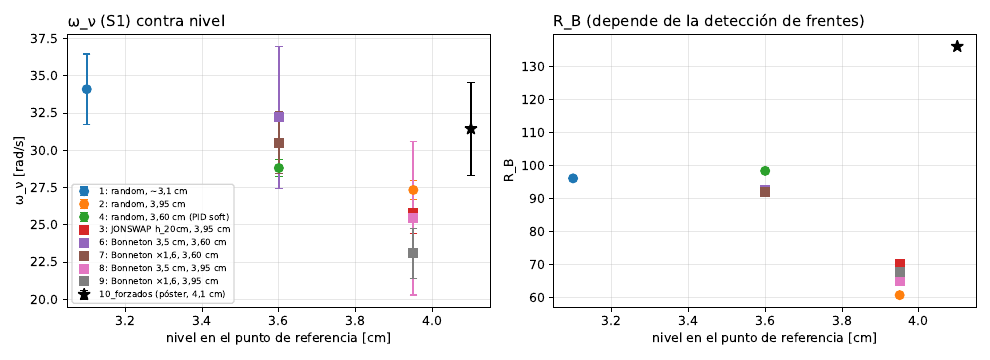
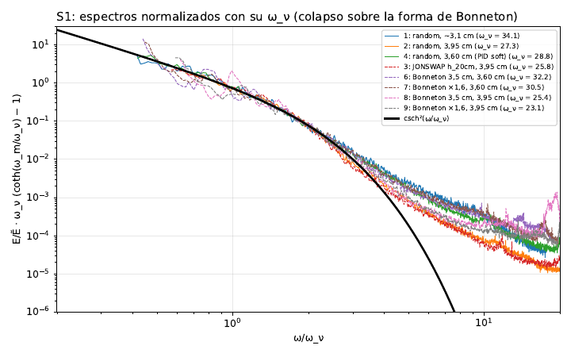
- Reporte final del día: reporteterceraiteracion2026-10-13.pdf (28 páginas; fuente en
Tercera iteración/Reporte/). - Calibración (plateaus, ODR): A = −0,0205 / −0,0211 / −0,0443 rad/cm, ~3,4× menos sensible que en junio en los canales 1 y 2 (~1,4× en el 3). Se atribuye a la conductividad del agua destilada. No se repite cambiando la frecuencia.
- Ruido: piso ~10× más bajo que en junio; desapareció el exceso del canal 3 (ahora con portadora más baja, 0,60 V).
- ων en S1 depende del nivel, no del forzado: 23–26 rad/s a 3,95 cm (random, JONSWAP h20cm y los dos Bonneton) y 28–32 rad/s a 3,60 cm. Las mediciones 8 y 9 lo confirman con exactamente los mismos forzados que 6 y 7. Con más agua la rompiente se corre hacia la playa y cambia la posición de S1 dentro de la zona de rompientes.
- Colapso: los 8 espectros de S1, normalizados con su ων, caen sobre csch²(ω/ων) hasta ~3ων; por encima, cola ≈ ω⁻⁴. RB depende del criterio de detección de frentes (con criterios equivalentes coincide con junio).
- JONSWAP: las curvas escaladas a 3,5 cm sí dan un JONSWAP en S3 (≈ 92–94 % en 0,5–1,5 fp, γ ≈ 3), a 3,60 y a 3,95 cm; la h20cm no. La huella se pierde hacia S1 (rotura). S1 está saturado: H ∝ h local (×1,6 en la paleta da ×1,1–1,16 en S1).
- Funciones de estructura: con los Bonneton de 3,5 cm, ζp(2) satura en 1 (tipo Burgers) en un rango angosto alrededor de τc ≈ 114 ms (donde la curtosis llega a 3), y Sp converge mucho mejor que con los random (2–11 % contra 11–63 %).
- Iribarren (S3): los random reproducen el póster (⟨ξ⟩ ≈ 0,23–0,24); los JONSWAP dan PDFs más angostas y ⟨ξ⟩ fijado por la amplitud del forzado (0,31 con 7,5 mm; 0,24–0,25 con 12 mm).
[18:57] Pendientes para mañana (14/10)
Lo principal:
[ ]Tomar videos.[ ]Poner los tres sensores juntos cerca de la rompiente.[ ]En los JONSWAP, acercar S1 a la rompiente (que en S1 no quede rastro del JONSWAP).
Además (de lo que surgió hoy):
[ ]Medir conductividad y temperatura del agua; ver si la deriva lenta sigue con la paleta quieta. Revisar el sensor 3 (portadora 0,60 V).[ ]Más estadística con el JONSWAP: varias corridas de 10 min con semillas distintas.[ ]Repetir el ruido intercambiando las entradas del DAQ (no urgente).[ ]Confirmar las profundidades locales sobre cada sensor.[ ]Idea: compuerta o absorbedor pasivo al final de la rampa, o compensador activo con el segundo motor (PID).[ ]Custom de Tp = 10 s: para otro momento.[ ]Borrar del pendrive el Bonneton obsoletoh_4.15cmy la carpetaUna_curva(sin confirmar).[-]Descartado: repetir la calibración cambiando la frecuencia.
2026-10-14
[09:33] Reorganización de la Tercera iteración y regla para el tanque
- Lo del 13/10 se movió a
Tercera iteración/Día 1/(Análisis, Calibracion, Curvas forzado, Reporte, Tres sensores, Un solo sensor). Lo de hoy va enTercera iteración/Día 2/. Se corrigieron las rutas de los scripts deDía 1/Análisis/(lockin, resumen, verespectros, verseries, barridoespectro, bateria.sh).linmot_bulk_upload.pyquedó en la raíz de la Tercera iteración. - Tanque de agua: diámetro interno ≈ 41 cm, altura 48–49 cm desde el piso. Da 1,320 L por cm, o sea unos 63–65 L en total (algo menos de capacidad útil, porque el fondo interno queda por encima del piso).
- Cuba: 198 × 77,5 cm → 15,35 L por cm de altura. 1 cm de cuba = 11,62 cm de tanque, así que el tanque lleno alcanza para unos 4,2 cm de cuba.
- Regla imprimible (una hoja A4 cortada al medio, dos tiras de 25 cm apiladas desde el piso, con escalas en litros y en cm de cuba):
Día 2/Regla tanque/regla_tanque.pdf(scriptregla_tanque.py, con--diametrocomo parámetro). [X]Imprimir la regla del tanque (la impresora de abajo no tenía cartucho). Ya está impresa y pegada en el tanque.
[09:44] Idea del día: ley ων(h)
- Idea del usuario: buscar una ley ων ∼ ha (dudaba entre a = −2 y a = −1/2), a partir de Bonneton 2023 y de Tayfun 2006. Para verificarla, medir con el espectro Bonneton de 20 cm de paleta (fp bien a la izquierda) en 5–7 niveles.
- Bonneton 2023 (Ec. 4.2 y 5.4): ων = (3/4π) g Hc/νc y νc = αν g1/2 Hc3/2, así que ων = (3/4π αν) (g/Hc)1/2. En la ISZ Hc/h0 ≈ 0,4–0,6 casi constante, y entonces ων ∝ (g/h)1/2 ∝ h-1/2, sin depender del forcing salvo por αν y γ.
- h-2 no sale de ningún cierre razonable: ν constante da ων ∝ h+1, y ν/h² da tasas ~1000 veces más chicas que las medidas.
- Día 1, con la profundidad local en S1 (nivel − 2,975 cm): a 3,95 cm (h = 0,98 cm) ων = 24,9 y a 3,60 cm (h = 0,62 cm) ων = 30,4, o sea a ≈ −0,45. Además ων/√(g/h) da 0,79 y 0,77. La medición 1 (3,1 cm, S1 casi en swash) no sigue la ley.
- Tayfun 2006: distribuciones de steepness y de ξ en aguas profundas. Sirve para fijar las condiciones incidentes (ξ0), de las que dependen αν y γ; no da la dependencia con h.
[11:56] Montaje nuevo (Día 2)
- Después de ~2 h de montaje: la rampa se movió 4 cm hacia adelante (a confirmar si “hacia adelante” es hacia la paleta).
- Sensores separados ~7,5 cm entre sí (se precisará con las fotos de las reglas). S1 a 28 cm del borde final de la rampa.
- Nivel actual: 3,95 cm. Plan: medir con los tres sensores a varias alturas.
- Forzado: subida del motor hasta la posición de trabajo, 90 s quieto (los últimos 30 s sirven para recalibrar, porque se movió todo) y 180 s de Bonneton “paleta hundida 20 cm” (el que mejor funcionó ayer). Duración: subida + 90 + 180 s.
- Generador: la misma frecuencia que ayer y 10 Vpp.
- Se torcieron un poco los alambres de los sensores: si la calibración no da lineal por poco, probablemente sea eso.
[11:59] Forzado y esquema del Día 2
- Forzado:
Día 2/Curvas forzado/quieto_90s_bonneton_C3_h_20cm_180s/curva_00_completa.csv(scriptgenerador_quieto_bonneton.py). Son 7001 puntos con dt 0,04 s y 280 s en total:- subida a 55 mm (0–5 s)
- quieto (5–95 s); recalibración en 65–95 s
- Bonneton C3 h20cm (95–275 s): los primeros 180 s del bloque de ayer, misma semilla, con entrada y salida de 5 s
- bajada (275–280 s)
- |v|max 268 mm/s y |a|max 1,79 m/s², igual que ayer.
- Generador: la misma frecuencia que ayer y 10 Vpp.
- Esquema con nivel 3,95 cm. Se supone S1 a 28 cm del borde final de la playa (x = 118 en coordenadas de rampa), así que S1 x = 90 (h = 0,80 cm), S2 x = 82,5 (h = 1,06), S3 x = 75 (h = 1,32). Sobre la playa quedan ~4,5 mm de agua. A confirmar: la dirección del corrimiento de 4 cm (se supuso hacia la paleta) y las separaciones exactas (fotos de las reglas).
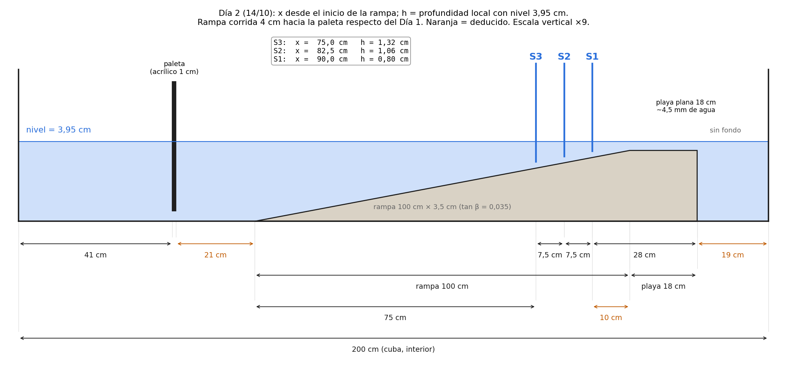
[12:05] Videos: para más adelante, con agua de la canilla
- El usuario decidió tomar los videos en el futuro con agua de la canilla, no hoy con la destilada. Queda pendiente.
[12:10] Observaciones de la primera medición (Día 2)
- Con este montaje los sensores vibran cuando se mueve el motor. Hay que tenerlo en cuenta en los espectros: puede meter picos de alta frecuencia durante el Bonneton. En el reposo el motor está quieto, así que no hay vibración.
- Al usuario le parece que la ola rompe entre S3 y S2. No se pueden juntar más ni acercarlos a S1 con este setup; con el montaje futuro tal vez sí.
- Consecuencia: S3 mediría antes de la rotura, y ahí no vale el modelo de Bonneton (es solo para la ISZ). Para ων(x) sirven S2 y S1, y S2 queda cerca del punto de rotura. Al cambiar el nivel, la rompiente se corre (más agua → más hacia la playa).
- Plan acordado: si S1 anda como ayer, se hace el barrido de altura para ων(h). El estudio horizontal ων(x) queda para otro momento, con otra técnica o cambiando el setup. Al final, las fotos de las reglas sirven para calibrar todo. ων no depende de la escala de la calibración, pero h sí hace falta con buena precisión.
[12:19] Primera medición del Día 2: Custom_altura_1 (nivel 3,95 cm)
- Datos en el pendrive (
Tercera iteración/Medicions Dia 2/), copiados aDía 2/Tres sensores/Mediciones/. Son 300 s a 250 kHz. Análisis enDía 2/Análisis/Custom_altura_1/(analisis_rapido.py). - Conexiones OK: los tres canales responden. El Bonneton arranca en t ≈ 100,4 s (reposo 69–99 s). Ruido en el reposo: S1 0,13 mm, S2 0,15 mm, S3 0,07 mm rms. Hm0 en el Bonneton: S3 4,8, S2 5,1, S1 4,6 mm.
- S1 muestra frentes de tipo bore (diente de sierra) bien formados.
- S1: ων = 26,1 ± 2,3 rad/s (ωm 12,7, RB 81, R² 0,978). Converge desde ~75 s y queda en 26–27 hasta los 170 s, así que 180 s alcanzan. Lo esperado con h-1/2 y el coeficiente de ayer (0,78·√(g/h), hS1 = 0,80 cm) era 27,3: compatible.
- Corrección del método: Ẽ se integra ahora desde ωm con el borde interpolado. Con bins discretos, ων saltaba ~10 % según si el bin de ωm entraba o no. El ajustebonnetonauto.py del Día 1 tiene la misma fragilidad.
- Artefactos:
- picos del lock-in en los empalmes de bloques de 30 s (t = 30, 60, 90…);
- un escalón de −0,3 mm en S1 a t ≈ 84 s (dentro del reposo; la mediana lo absorbe);
- deriva lenta tipo exponencial en los primeros ~50 s;
- nivel medio ~1,5 mm más bajo durante el Bonneton (set-down);
- pico angosto en S2 a ~550 rad/s (≈ 88 Hz), posible vibración, fuera del rango de ajuste.
- Primera foto de la regla:
Día 2/Fotos regla/regla_altura_1.jpg. Leída: el contacto con el vidrio da ~3,94 cm y el borde inferior de la banda de la superficie ~3,82 cm. Hay que fijar un criterio de lectura (a confirmar). - Ajuste por canal (
espectros_ajustados.png):- S3 (h 1,33 cm): ων = 20,6 ± 3,3 (R² 0,967, mal ajuste: joroba en 20–30 rad/s, compatible con estar antes de la rotura o cerca);
- S2 (h 1,06 cm): ων = 21,0 ± 1,2 (R² 0,982);
- S1 (h 0,80 cm): ων = 26,1 ± 2,3.
- Desde S1 con h-1/2 se esperaba S2 ≈ 22,7 y S3 ≈ 20,3: compatible.
[12:33] Segunda medición: Triangulos (forzado de siempre, Curvasrandom3, nivel 3,95 cm)
- El usuario usó su forzado de siempre (Command Table, sin reposo) para ser coherente con ayer. Dura 300 s. Copiado de
Medicions Dia 2/. - Sin reposo, así que no hay punto de calibración: η se toma respecto de la media y se analiza 5–299 s. Hm0 ≈ 8,5 mm en los tres sensores.
- ων automático: S3 21,8 ± 3,2 | S2 22,3 ± 1,0 | S1 27,2 ± 1,5 (R² 0,987, ωm 15,6, RB 69). Con los parámetros fijos de ayer (0,1 s; 0,05 cm; 20–80) S1 da 24,9 ± 1,7.
- Convergencia en S1: oscila entre 21 y 36 hasta ~150 s y después se estabiliza en 26,5–27,5. Con triangulares hacen falta ≥ 150–180 s.
- Ayer a 3,95 cm, rehecho con el método nuevo de Ẽ:
- muchosforzados395 (triangulares): 26,2 ± 0,8 (fijos: 27,3 ± 0,6);
- Bonnetoncustom395: 24,4 ± 2,8;
- Bonnetonh35395: 25,1 ± 4,8.
- Ventanas de 180 s de muchosforzados395 con parámetros fijos: 31,3 / 30,2 / 19,5. Hm0 bajó de 12 a 8 mm a lo largo de esa medición.
- Ojo: hoy S1 está en x = 90 (h ≈ 0,80 cm) y ayer en x = 85 (h ≈ 0,98 cm), así que a igual nivel no es la misma profundidad local. Con h-1/2 se esperaría ~+10 %, que con las barras actuales no se resuelve. Además ayer la cuba estaba inclinada ~0,55 cm entre extremos y el nivel se leía junto a la paleta.
[12:39] Forzado único para el barrido de altura (tarde)
- El usuario decidió medir en cada altura los dos forzados con una sola curva.
- Archivo:
Día 2/Curvas forzado/bonneton_180s_espera_30s_muchos_forzados_308s/617640ms_…csv(también en el pendrive,Curvas_jonswap/). Son 15442 puntos con dt 0,04 s: 617 640 ms. - Tramos:
- subida (0–5 s);
- quieto en 55 mm (5–95 s); calibración en 65–95 s;
- Bonneton C3 h20cm (95–275 s);
- bajada (275–280 s);
- espera en x = 0 (280–310 s); segundo reposo;
- muchos forzados: 21 curvas de random3 (310–617,6 s).
- Las random3 se remuestrearon a 0,04 s porque con 0,02 s no entraba en los 16000 puntos. El error máximo es 1,4 mm, y los picos de velocidad discreta quedan en 631 mm/s (las originales llegan a 707).
- El DAQ tiene que medir más que la curva: ≥ ~640 s, contando que arranca antes que el motor.
- Análisis:
analisis_rapido.py <nombre> --nivel X --combinado. Da ων del Bonneton y de los muchos forzados por canal, y los dos puntos de reposo. - Plan: barrido de altura después de almorzar y con eso se cierra el día.
[13:39] Barrido de altura: plan
- Queda agua en el tanque solo para subir 0,8 cm de cuba (~12,3 L), así que el máximo es ~4,75 cm desde 3,95. El usuario empieza llenando y después va vaciando.
- Pasos de 0,2 cm de cuba = 3,07 L = 2,3 cm de tanque. (Corrección: antes dije por error 23–31 L por paso.)
- [13:48] Con el agua del tanque se llegó solo a 4,55 cm. Corre la primera altura del barrido (4,55). Después se baja de a 1 mm hasta ~3,4 cm (~12 mediciones de ~11 min).
- [13:49] La primera corrida a 4,55 cm se hizo con el generador de la portadora apagado. El usuario lo notó enseguida y la reinicia. Esa corrida no sirve (sin portadora no hay señal de los sensores).
[13:53] Protocolo automático para el barrido de altura
Día 2/Análisis/vigilar_barrido.pyvigilaMedicions Dia 2/en el pendrive. Con cada.bincompleto (tamaño = scans × canales × 2):- lo copia a
Día 2/Tres sensores/Mediciones/y lo verifica con cmp; - toma el nivel del nombre (
…_455o…_4.55→ 4,55 cm) o deAnálisis/niveles.json; - corre
analisis_rapido.py --combinado; - regenera
Análisis/barrido_vivo.pdf(abierto en Evince, se recarga solo): ων(h) de S1 (Bonneton y muchos forzados), ων/√(g/h) y calibración φreposo contra nivel de los tres sensores con residuos.
- lo copia a
- Alertas automáticas: ruido de reposo > 0,5 mm (¿generador apagado?), R² del Bonneton en S1 < 0,95, o sin ajuste.
[14:02] Barrido: segunda altura medida
- El usuario ajustó (apretó) los sensores 1 y 2 para que no se suelten. En principio no se movieron. Si en la calibración de reposos S1 o S2 muestran un salto entre antes y después, viene de acá.
- Con más agua hay bastantes más rebotes (reflexiones). Pueden molestar en el análisis: energía reflejada que vuelve sobre los sensores y más seiche.
- [14:08] La medición de la segunda altura es
Custom_combinado_altura_2(630 s), con nivel leído ~4,50–4,55 cm (se usa 4,525 ± 0,025). Foto:Día 2/Fotos regla/regla_altura_2.jpg; en la foto el contacto con el vidrio da ~4,60 y el borde inferior de la banda ~4,54. Se está midiendo la tercera altura, ~4,45 cm.
[14:15] Barrido: altura 2 (Custom_combinado_altura_2, 4,525 cm, hS1 = 1,38 cm)
- ων S1: Bonneton 23,5 ± 1,5 (R² 0,961), muchos forzados 20,4 ± 1,0 (R² 0,989). Contra 3,95 cm (hS1 0,80; Bonneton 26,1, muchos/Triangulos 27,2), el exponente da ≈ −0,2 con Bonneton y ≈ −0,5 con muchos forzados. Son solo 2 puntos.
- Con más agua hay más rebotes: el ajuste del Bonneton empeora un poco y el rango automático se estira hasta 120 rad/s.
- Nivel medio y posición de la paleta:
- al subir la paleta de 0 a 55 mm, el nivel en los sensores baja ~1,5 mm de golpe y se recupera en ~100 s (el agua pasa por la ranura de ~1 cm bajo la paleta); es la deriva del principio de cada medición;
- con la paleta en 0 (segundo reposo) el nivel queda ~1,5 mm más alto y sin asentar, así que el segundo reposo se excluye de la calibración.
- Calibración: la pendiente entre la altura 1 (mañana) y la 2 sale 2–3 veces menor que la del Día 1, y distinta en cada sensor. Entre medio se apretaron S1 y S2 y se reinició el generador (a confirmar que quedó en la misma frecuencia). La medición de la mañana se excluye del ajuste; se calibra solo con el primer reposo de las mediciones de la tarde.
Triangulos(3,95, sin reposo) se suma al PDF vivo como punto de muchos forzados en ων(h).- [14:19] Altura 3: nivel ~4,45 cm (lo dijo el usuario). Foto
Día 2/Fotos regla/regla_altura_3.jpg: el borde inferior de la banda da 4,40, el centro 4,46 y el contacto superior 4,51. Fotos renombradas comoregla_altura_N.jpg.
[14:27] Barrido: alturas 3 y 4, paleta
- Altura 3 (
Custom_combinado_altura_3, ~4,45 cm, 647 s): el primer intento de análisis quedó cortado (al expirar el monitor se cortó también el vigilante). Se relanza; ahora el vigilante corre con nohup (log enAnálisis/vigilante.log). - Altura 4 (
Custom_combinado_altura_4, midiéndose): nivel ~4,275 cm. Al principio el usuario estimó 4,30–4,35. - Calibración: se usa el primer reposo (indicación del usuario).
- La paleta de acrílico del motor a veces toca la pared de la cuba. El usuario la ajustó durante la altura 4, en el reposo previo a los muchos forzados (la espera con la paleta en 0). En la altura 4, el Bonneton es con la paleta posiblemente rozando y los muchos forzados ya con la paleta ajustada. Las alturas anteriores pueden haber tenido roces.
[14:31] Barrido: resultado de la altura 3 (4,45 cm, hS1 1,30 cm)
- ων S1: Bonneton 22,2 ± 1,3 (R² 0,981), muchos forzados 20,8 ± 0,8 (R² 0,991). Hm0 S1: 6,6 mm (Bonneton), 8,5 mm (muchos).
- Exponente con 3 puntos (hS1 0,80–1,38): Bonneton a = −0,24 ± 0,19, muchos forzados a = −0,55 ± 0,12. Con muchos forzados es compatible con −1/2 e incompatible con −2.
- Calibración por reposos: no funciona. Entre 4,525 y 4,45 la fase de reposo cambia con el signo opuesto al de la calibración del Día 1 y con magnitud equivalente a 2–4 mm, distinta en cada sensor; el cambio de nivel fue 0,75 mm. Domina una deriva lenta de la fase entre mediciones (~0,01 rad en 15 min: ¿temperatura, generador, sensores tocados?), no el nivel. Para h se usa la regla. Si hace falta la calibración, conviene hacerla aparte con escalones rápidos dentro de una sola medición, como el Día 1.
- [14:34] Foto altura 4:
Día 2/Fotos regla/regla_altura_4.jpg. La banda de la superficie va de 4,19 a 4,31 (centro ~4,25); coherente con el ~4,275 leído. - [14:36] Altura 5: nivel ~4,05 cm.
[14:40] Barrido: resultado de la altura 4 (4,275 cm, hS1 1,13 cm)
- ων S1: Bonneton 23,8 ± 1,2 (R² 0,984), muchos forzados 23,5 ± 1,4 (R² 0,989). Hm0 S1 6,1 mm. Ruido de reposo ≤ 0,15 mm. Es la primera medición con la paleta ajustada (solo en los muchos forzados).
- Exponente en S1 con 4 alturas (h 0,80–1,38 cm): Bonneton a = −0,25 ± 0,19, muchos forzados a = −0,56 ± 0,12.
- h local = nivel de la regla − 0,035·x (S1 x = 90 → fondo 3,15 cm). Incertezas: inclinación de la cuba, posiciones de los sensores, forma real de la rampa y cero de la regla. Dan un corrimiento constante δ que afecta el exponente. Propuesta: medir directamente la profundidad en S1 una vez.
- [14:40] El usuario va a medir la profundidad (altura de la rampa) en S1 al terminar la medición 5 (4,05 cm), para fijar el corrimiento δ de h local.
[14:42] Calibración revisada (indicación del usuario): en la altura 2 los sensores S1/S2 estaban un poco corridos; después del ajuste volvieron a su posición. Excluyendo la altura 2 (
Análisis/excluir_calibracion.json) e incluyendo la medición de la mañana (3,95), el reposo 1 da rectas con el signo correcto:- S1: A = −0,0325 rad/cm (Día 1: −0,0205), rms 0,18 mm;
- S2: A = −0,0199 (Día 1: −0,0211), rms 0,75 mm;
- S3: A = −0,0393 (Día 1: −0,0443), rms 0,34 mm.
Lo que antes parecía una deriva era la altura 2.
- [14:43] Hipótesis del usuario: S1 podría tener hoy otro ángulo de inmersión que ayer. Explicaría solo una parte: 1,59× exige cos θ ≈ 0,63 (θ ≈ 51° respecto de un sensor vertical) si fuera solo el ángulo. Más probable una combinación de inclinación y separación entre alambres (se habían torcido). A confirmar mirando o fotografiando S1.
- [14:51] Foto altura 5:
Día 2/Fotos regla/regla_altura_5.jpg. La banda va de 3,97 a 4,10 (centro ~4,04); coherente con el ~4,05 leído. - [14:53] Altura 6: nivel ~3,9 cm.
- [14:54] La medición directa de la profundidad en S1 se pasa para después de la altura 6 (3,9 cm).
[15:00] Barrido: resultado de la altura 5 (4,05 cm, hS1 0,90 cm)
- ων S1: Bonneton 26,7 ± 2,7 (R² 0,982), muchos forzados 27,9 ± 1,5 (R² 0,991). Hm0 S1 5,5 mm. Ruido de reposo ≤ 0,19 mm.
- S1 Bonneton n = 5: exponente a = -0.29 ± 0.17
- S1 muchos forzados n = 5: exponente a = -0.63 ± 0.11
- calibración S1: A = -0.02597 rad/cm (Día 1: ver calibraciontercera.json), residuo rms = 1.18 mm de nivel, n = 4
- calibración S2: A = -0.01650 rad/cm (Día 1: ver calibraciontercera.json), residuo rms = 1.24 mm de nivel, n = 4
- calibración S3: A = -0.03697 rad/cm (Día 1: ver calibraciontercera.json), residuo rms = 0.43 mm de nivel, n = 4
[15:07] Medición directa: rampa en S1 = ~3,4 cm
- El usuario midió ~3,40 cm de altura de la rampa en S1. El esquema suponía 3,15 (x = 90, tan β 0,035), así que hS1 real es 2,5 mm menor en todas las alturas: queda en 0,55–1,125 cm (antes 0,80–1,38). Si la rampa es recta, S1 estaría en x ≈ 97 cm, o la rampa no es lineal. Falta medir S2 y S3.
- Con el fondo corregido (
Análisis/fondo_sensores.json): exponente en S1 con muchos forzados a = −0,48 ± 0,08 y con Bonneton a = −0,22 ± 0,13. - Las referencias h-1/2 y h-2 del PDF vivo tienen ahora la amplitud ajustada a los datos (antes estaban ancladas a mano en el h viejo).
- Consecuencia para el barrido: con el fondo de S1 en 3,4 cm (y la playa en ~3,5), el nivel mínimo útil es ~3,6 cm (hS1 ≈ 2 mm), no 3,4.
- [15:09] Altura 6: el nivel se corrige a ~3,8 cm (antes ~3,9). hS1 ≈ 0,40 cm con la rampa medida.
- [15:11] Altura 7: nivel ~3,7 cm (hS1 ≈ 0,30 cm).
- [15:11] Foto altura 6:
Día 2/Fotos regla/regla_altura_6.jpg. La banda va de 3,73 a 3,89 (centro ~3,81); coherente con el 3,8 corregido.
[15:15] Barrido: resultado de la altura 6 (3,8 cm, hS1 0,40 cm)
- ων S1: Bonneton 27,2 ± 2,9 (R² 0,962), muchos forzados 29,3 ± 1,3 (R² 0,992). Hm0 S1 3,4 mm (Bonneton), 7,1 mm (muchos). Reposo de S1: ruido 0,32 mm, deriva −0,8 mm (más que en las otras alturas).
- El punto queda por debajo de la tendencia h-1/2: el exponente con muchos forzados pasa a −0,38 ± 0,05 (6 puntos) y con Bonneton a −0,19 ± 0,09. Con h = 4 mm, del orden de la longitud capilar (~2,7 mm), y con S1 al borde del swash, es esperable que la ley se rompa.
- El análisis arrancó con nivel 3,9 (antes de la corrección); se corrigió a 3,8 en resultados.json y en puntoscalibracion.json.
- Reglas marcadas para verificar el nivel usado:
Día 2/Fotos regla/verificacion/regla_altura_N_marcada.jpg(líneas celestes en cada cm, roja en el nivel usado, amarilla en la banda estimada; scriptmarcar_reglas.py). - Rango en h: S1 cubre hoy 0,40–1,125 cm (factor 2,8, ~0,45 décadas). Una década exigiría hS1 ≈ 1 mm (S1 seco o en swash) o ~7,4 cm de nivel. Bonneton 2023 cubre h0 3,0–8,4 cm, también un factor 2,8.
[15:21] Nivel en las fotos y fondo de S1
- Nivel por análisis de imagen (
Fotos regla/verificacion/medir_nivel_fotos.py):- la escala automática (grilla de mm) coincide ±1 % con la manual;
- la línea de agua se detecta como el mínimo de intensidad lejos de la regla;
- la marca de cm no se pudo detectar de forma automática, así que se fijó sobre recortes (
grilla_altura_N.png). - Validación contra la recta de reposos de S3: con los niveles del usuario el rms es 0,44 mm, con los de las fotos 0,91 mm. El borde de la banda depende del ángulo de la cámara. Se mantienen los niveles leídos por el usuario (incerteza ~0,4 mm según S3).
- Barrido de la altura del fondo en S1 (
Análisis/barrido_fondo_S1.png), buscando el mejor colapso sobre ων ∝ h-1/2:- muchos forzados con todos los puntos: mínimo χ²red 0,60 en 3,19 cm (con 3,40: 1,27);
- sin la altura 6: mínimo 0,40 en 3,36 (con 3,40: 0,42). El mínimo es muy ancho (3,15–3,45), así que el colapso por sí solo no fija el fondo.
- El exponente libre con muchos forzados va de −0,53 (fondo 3,15) a −0,39 (3,40), o −0,48 sin la altura 6.
- Con Bonneton el exponente no llega a −0,5 para ningún fondo (≥ −0,26).
- El usuario mide la altura con la regla casi al final de la cuba (cerca de la playa y de S1), así que la inclinación de la cuba pesa poco en S1.
- [15:24] Foto altura 7:
Día 2/Fotos regla/regla_altura_7.jpg. La banda va de 3,62 a 3,73 (centro ~3,68); coherente con el 3,7 leído.
[15:26] Fondo de S1 medido de nuevo: 3,20 cm
- El usuario lo volvió a medir con calma: la rampa en S1 está a 3,20 cm (no 3,4). Coincide con el óptimo del colapso con muchos forzados (3,19 cm, χ²red 0,60) y está cerca del esquema (3,15). Se actualiza
Análisis/fondo_sensores.json. - [15:31] Foto del fondo en S1:
Día 2/Fotos regla/fondo_S1.jpg(regla apoyada en el fondo de la cuba, ~107 px/cm). El borde de la rampa cae en ~3,2 cm, lo que confirma la medición.
[15:32] Barrido: resultado de la altura 7 (3,7 cm, hS1 0,50 cm con fondo 3,20)
- ων S1: Bonneton 31,1 ± 1,5 (R² 0,983), muchos forzados 29,5 ± 0,9 (R² 0,988). Hm0 S1 4,2 mm. Ruido de reposo ≤ 0,17 mm.
- Con 7 alturas (hS1 0,50–1,325 cm): Bonneton a = −0,32 ± 0,06, muchos forzados a = −0,39 ± 0,04.
- ων √(h/g) con muchos forzados: 0,67 / 0,73 / 0,75 / 0,82 / 0,78 / 0,74 / 0,75 (de h chico a h grande). Casi constante (~0,75) salvo el h más chico. Con Bonneton crece con h (0,67 → 0,86).
- Calibración: S3 sigue lineal (rms 0,41 mm); S1 (3,0 mm) y S2 (2,1 mm) empeoran con los niveles bajos (¿no linealidad de S1 casi seco? a revisar).
- [15:33] Altura 8: nivel 3,55 cm (hS1 ≈ 0,35 cm). Probablemente la última: los sensores quedan poco sumergidos.
[15:36] ¿Bonneton analizó ων(h)?
- No como ley. Da ων solo en dos experimentos, al propagarse las olas a menor profundidad (§5, Fig. 7–8):
- BK94-9: h0 7,6 → 4,0 cm, ων 18,7 → 24,1 rad/s, lo que implica a ≈ −0,40;
- vN03-C3: h0 8,4 → 3,0 cm, ων 14,9 → 16,1, a ≈ −0,08.
- Lo que sí analiza: RB contra h0 (Fig. 10) y νc contra g1/2 Hc3/2 (Fig. 11, Ec. 5.4). De ahí sale ων ∝ (g/Hc)1/2, pero la dependencia con h aparece solo si Hc ∝ h.
- Nuestros exponentes (−0,39 muchos forzados, −0,32 Bonneton) caen entre sus dos casos y coinciden con BK94-9. La diferencia entre sus dos casos sugiere que Hc/h no siempre es constante (vN03-C3 tiene Tp 2 s, bore merging fuerte e infragravitatorias). Medir Hc (con la calibración) permitiría separar ων(Hc) de ων(h).
- [15:43] El tanque azul es un ROT-14 (RO, presurizado con vejiga): 52,9 L totales, ~31,7 L útiles (16“ × 25”). La regla de litros/cm pegada afuera no aplica si está presurizado. Puede alcanzar agua para calibrar llenando por escalones.
- [15:45] El usuario confirma que en la altura 8 (3,55 cm) el sensor 1 ya está al límite de inmersión.
- [15:46] Foto altura 8:
Día 2/Fotos regla/regla_altura_8.jpg. La banda va de 3,47 a 3,56 (centro ~3,52); compatible con el 3,55 leído, en el borde superior de la banda. - [15:49] Perfil de la rampa: pendiente conocida de diseño, 35 mm en 1000 mm (tan β = 0,035). Con el fondo medido en S1 (3,20 cm), S1 queda en x ≈ 91,4 cm (el esquema decía 90). Fondo de S2 y S3 deducido con la pendiente y la separación de ~7,5 cm: S2 2,94 cm, S3 2,68 cm (provisorio hasta medir las separaciones).
- [15:49] Generador confirmado: 61,3 kHz y 10 Vpp, igual que ayer y que a la mañana. Por lo tanto, la diferencia de pendiente de S1 respecto del Día 1 no viene del generador sino de la geometría del sensor (ángulo o separación de los alambres tras el ajuste).
- [15:49] Confirmado: la rampa se corrió 4 cm hacia la paleta, así que paleta–rampa = 21 cm. Esquema actualizado (sin fondo 19 cm, sigue deducido).
[15:52] Barrido: resultado de la altura 8 (3,55 cm, hS1 0,35 cm), la última
- ων S1: Bonneton 32,1 ± 1,4 (R² 0,958), muchos forzados 36,2 ± 2,6 (R² 0,982). Hm0 S1 2,9 mm. Ruido de reposo 0,15 mm.
- S1 no se recorta: la distribución de η no se acumula en el mínimo (percentil 0,1 % a −1,4 mm con Bonneton y −3,5 mm con muchos forzados, pendiente del Día 1); en el zoom se ven bores bien formados.
- ων √(h/g) en S1 con muchos forzados, de h = 0,35 a 1,325: 0,68 / 0,67 / 0,73 / 0,75 / 0,82 / 0,78 / 0,74 / 0,75, es decir ≈ 0,74 ± 0,05 en todo el rango.
- Barrido completo, 8 alturas (hS1 0,35–1,325 cm, un factor 3,8): exponente en S1 con muchos forzados a = −0,39 ± 0,04, con Bonneton a = −0,28 ± 0,04. S2 y S3 (cerca de la rotura) dan exponentes más planos.
- [15:52] Fondo medido (aproximado) en S2 ~3,1 cm y en S3 ~2,9 cm. Con la pendiente 0,035, esto implica S2 a ~3 cm de S1 y S3 a ~9 cm, lo que no cierra con la separación de ~7,5 cm entre sensores. Hay que medir las separaciones con cinta. Se usan los valores medidos.
- [15:55] El fondo de S2 y S3 no tiene foto (era complicado sacarlas): solo hay lectura aproximada (~3,1 y ~2,9 cm).
[16:06] Reporte del Día 2 y corrección de la altura 6
- Corrección: en la altura 6 el DAQ arrancó ~25 s antes que el motor y el detector tomó la subida de la paleta (t ≈ 26 s) como arranque del Bonneton (el real es 127,9 s). El detector ahora exige 8 s seguidos y se reprocesaron todas las alturas (
Análisis/reprocesar_todo.sh): solo cambió la 6, que queda en Bonneton 27,2 ± 1,5 y muchos forzados 28,4 ± 0,9. - Exponentes finales en S1 (8 alturas, fondo 3,20): Bonneton −0,27 ± 0,04, muchos forzados −0,39 ± 0,04; S2 −0,15 / −0,31; S3 +0,06 / −0,29.
- Calibración por reposos (sin la altura 2): S3 −0,0416 ± 0,0031 rad/cm (Día 1: −0,0443), rms 0,5 mm; S1 y S2 no lineales (rms 4 y 2,5 mm).
- Reporte (15 páginas):
Día 2/Reporte/reporte_dia2.pdf(figuras configuras_reporte_dia2.py). Falta agregar la calibración por escalones. - reportedia2.pdf
[16:12] Idea: sensor con alambre más grueso
- Idea del usuario: probar un sensor con alambre más grueso.
- Contexto del día (deducción, a confirmar):
- el alambre fino se tuerce y se corre al ajustarlo; la pendiente de S1 cambió respecto del Día 1 y su calibración por reposos no fue lineal;
- un alambre más rígido mantendría la geometría (ángulo y separación) y la calibración.
- A cambio: más menisco sobre el alambre y más perturbación del flujo, que importan con h de pocos mm.
[16:16] Calibración por escalones (Día 2)
- Subiendo de 3,8 a 4,5 cm. Nivel leído al inicio de la cuba (lado de la paleta), en el mismo punto que la calibración del Día 1. El barrido se leyó en el extremo opuesto (final, cerca de S1).
- Entre las dos escalas de nivel puede haber un corrimiento por la inclinación de la cuba (el Día 1 era ~0,55 cm entre extremos). La pendiente de la calibración no cambia si la inclinación es constante, pero sí la ordenada.
[16:41] Calibración por escalones con fotos y espectros tipo póster
Calibracion_dia_2(846 s, inicio 16:00:24): el nivel no quedó en plateaus netos, así que se usó el método Afotos del Día 1. Son 13 fotos ubicadas por su hora EXIF y la fase se promedia en los 10 s anteriores a cada una.- El nivel de cada foto sale por imagen (cámara fija en las fotos 2–13; 52,2 px/mm; escalones de ~1 mm; 6,4 mm en total), anclado al final leído (4,50 cm).
- Resultados:
- S1: −0,0162 ± 0,0008 rad/cm (rms 0,31 mm);
- S2: −0,0161 ± 0,0014 (rms 0,78);
- S3: −0,0413 ± 0,0020 (rms 0,39). Coincide con sus reposos (−0,0416) y con el Día 1 (93 %). S1 y S2 son ~20 % menos sensibles que el Día 1.
- Salto de ~2 mm en t ≈ 210 s en los tres sensores, a confirmar qué fue.
- Espectros tipo póster de S1 en las 8 alturas y los dos forzados (
Análisis/espectros_poster_barrido.py). Las dos mitades de cada ventana difieren 2–5 rad/s con el Bonneton y 1–3 con muchos forzados (el error del ajuste subestima). Con errores realistas: muchos forzados a = −0,38 ± 0,05, Bonneton −0,27 ± 0,08. - Reporte actualizado (20 páginas): reportedia2.pdf
../../../Assets/2026/10/Day_14/calibracion_dia2_fotos.pdf
- [16:59] El PDF vivo del barrido (
Análisis/barrido_vivo.pdf) quedó autocontenido, con 5 páginas:- ων(h) en S1 y calibración por escalones (reposos como comparación);
- serie de la calibración convertida a nivel, con las ventanas de 10 s antes de cada foto y el Δh de cada foto;
- fotos de la calibración con la línea de agua detectada;
- reglas del barrido marcadas y foto del fondo de S1;
- tabla del barrido.
- [17:10] Calibración con plateaus marcados a mano por el usuario (7 plateaus,
Calibracion/pintar_plateaus_dia2.py). Fotos al principio y al final de cada escalón (el último, solo al principio).- El primer plateau (antes de t ≈ 210 s) se excluye: las fotos 1 y 2, inicio y final de ese escalón, dan el mismo nivel (±0,2 mm), pero las fases saltan ~2 mm. Fue un corrimiento de los sensores, no del agua.
- Resultado (adoptado): S1 −0,0174 ± 0,0011 (rms 0,27 mm), S2 −0,0167 ± 0,0014 (0,36 mm), S3 −0,0420 ± 0,0019 rad/cm (0,20 mm). Compatible a 1σ con el método de las fotos.
- Hm0 de S1 y S2 calculados con la pendiente del Día 1: multiplicar por ~1,18 y ~1,26.
- Reporte (21 páginas) y PDF vivo actualizados.
[17:13] Nueva línea de análisis: evolución del espectro con la posición y colapso
- Idea del usuario: estudiar cómo evoluciona el espectro con la posición (S3 → S2 → S1 y con el nivel) y si los espectros colapsan como en Bonneton 2023 (Fig. 9: E/Ea contra ω/ων, con Ea = 8νc²ωm/9g, sobre csch²).
- Idea para más adelante: ajustar la ola rompiente entre sensores con la solución de Burgers por Cole-Hopf y ver si colapsan entre sí con el parámetro de autosimilaridad z.
- [17:15] Resultados de la sección nueva (
Análisis/colapso_espectros.py, reporte §“Evolución del espectro con la posición y colapso”, 24 páginas):- Los 48 espectros (3 sensores × 8 alturas × 2 forzados) colapsan sobre csch² hasta ω ≈ 3ων. El rms de log10 es ~0,08–0,11 en S1/S2 y 0,12–0,19 en S3.
- Por encima de 3ων hay una cola más lenta, ordenada por profundidad: menos agua, más cola. ¿Capilaridad?
- Hm0 crece de S3 a S2 y cae en S1 (asomeramiento, rotura cerca de S2, disipación).
- A nivel bajo, ων crece entre S3 y S1 como h-1/2: en la altura 8, factor 1,39 (Bonneton) y 1,34 (muchos) contra 1,36 predicho.
[17:19] ¿De qué ajuste sale ων(h)? Comparación de métodos
- El gráfico usaba el ajuste automático propio: csch² sobre E/Ẽ en escala lineal, sin pesos, con Ẽ con borde interpolado y el ajuste desde max(ωlo, ωm).
- El código del póster da distinto en dos puntos:
- altura 3 con muchos forzados: 24,3 contra 20,8, porque incluye 2 bins por debajo de ωm (ajuste desde ωlo = 16 < ωm = 16,9);
- altura 8: 33,6 contra 36,2, por la integral discreta de Ẽ.
- Con los valores del póster el exponente de muchos forzados pasa a −0,25.
- Causa: el ajuste lineal sin pesos lo dominan los pocos bins de baja frecuencia.
- Ajuste en log (log10 E/Ẽ contra log10 csch², todos los puntos con peso parecido): muy estable ante el rango.
- muchos forzados: a = −0,45 (rango automático), −0,46 (16–80 y 20–80 fijos);
- Bonneton: a = −0,44 con rango fijo 16–80 o 20–80; −0,36 con el rango automático, que en los niveles altos se estiraba hasta 100–145 rad/s y metía la cola.
- Propuesta: adoptar como estándar el ajuste en log con rango fijo 20–80 rad/s (a confirmar con el usuario).
- [17:24] Figuras para revisar los métodos:
Análisis/comparacion_metodos_ajuste.pdf(17 páginas: una por altura y forzado con los tres ajustes y el cociente, más el resumen);Análisis/omega_nu_h_espectros.pdf(4 páginas A4: ων(h) en S1 con el espectro de cada punto alrededor; log 20–80 y póster, para cada forzado).- Con la incerteza realista (máx del error del ajuste y la diferencia entre mitades/2): log → Bonneton a = −0,45 ± 0,05, muchos −0,46 ± 0,06; póster → −0,27 ± 0,09 y −0,24 ± 0,06.
- [17:26] Figura pedida:
Análisis/omega_nu_h_poster.pdf(A4 apaisado, una página por forzado). ων(h) en S1 con los espectros del póster (Fig. 12/13 del reporte) junto a cada punto; ων del póster: Bonneton a = −0,27 ± 0,09, muchos −0,24 ± 0,06. - [17:29] Figura de página entera con insets:
Análisis/omega_nu_h_insets_poster.pdf(ajuste del póster) yomega_nu_h_insets_log.pdf(log 20–80). La versión anterior quedó comoomega_nu_h_poster_v1.pdf(también en Reporte/figuras). - [17:40] Reporte actualizado (36 páginas):
- subsección “Método de ajuste de ων: lineal, póster y en log”, con las figuras de ων(h) e insets (log y póster) y las curvas ajustadas superpuestas;
- apéndice con las series de 15 s (S3, S2, S1 en paneles verticales; Bonneton y muchos forzados) para las 8 alturas (
Análisis/series_15s.py).
- [17:41] Series de 15 s: con muchos forzados, la ventana se centra en el pulso grande de una triangular (máximo de S3); se sigue el mismo pulso de S3 a S1.